Analisi condotta il 21/09/2026 — fonte unica: dump Discogs locale (PostgreSQL)
Questo studio ricostruisce chi ha inciso con chi fra i musicisti italiani presenti in Discogs e chiede se il genere sessuale delle persone strutturi quelle collaborazioni. La risposta breve è che sì, ma non nel modo che ci si aspetterebbe. L’omofilia esiste ed è statisticamente solidissima, ma è molto più debole della separazione per genere musicale; è asimmetrica — sono le donne a fare gruppo fra loro, non gli uomini, all’opposto di quanto riporta la letteratura corrente; e non si è rafforzata dopo il 2000: quello che si è rafforzato è la tendenza della rete a chiudersi in triangoli, che produce lo stesso effetto apparente per una ragione diversa.
| Musicisti italiani identificati | 100.201 |
| di cui con genere sessuale determinato | 70.374 (70,2%) |
| Quota di donne fra i determinati | 13,8% — un rapporto di 6,25 uomini per ogni donna |
| Crediti analizzati | 4.169.130, di cui 2.670.018 (64,0%) risolti sulla singola traccia |
| Rete di collaborazione | 82.595 artisti collegati, 702.613 legami |
| Componente gigante | 95,7% degli artisti collegati |
| Assortatività di genere sessuale | r = 0,0511 (IC 95% 0,0479–0,0543) |
| Assortatività di genere musicale | r = 0,5186 |
| Omofilia di genere pre-2000 → post-2000 | 0,0494 → 0,0731 (differenza non significativa nell’ERGM) |
| Omofilia ERGM, donne contro uomini (mediana sulle sottoreti) | 0,679 contro 0,074 in log-odds |
| ERGM | 8 sottoreti, 3 modelli ciascuna, 8 convergenti,
gwesp incluso |
La musica registrata italiana è un mondo di uomini, e lo è rimasta. 13,8% di donne fra gli artisti con genere determinato significa 6,3 uomini per ogni donna. La quota non cresce in modo monotono nel tempo: parte dal 16,9% per chi debutta negli anni Sessanta, scende al 12,4% negli anni Ottanta e risale al 20,5% per chi debutta dal 2020.
Il genere musicale separa molto più del genere sessuale. L’assortatività per genere musicale (0,519) è circa 10 volte quella per genere sessuale (0,051). Chi fa jazz incide con chi fa jazz molto più sistematicamente di quanto gli uomini incidano con gli uomini.
L’omofilia di genere sessuale è piccola ma reale. r = 0,0511 sembra poco, ma il modello nullo a gradi preservati dà 0,0000 e l’intervallo di confidenza (0,0479–0,0543) sta tutto sopra lo zero. Non è un effetto di composizione, è struttura.
Sono le donne a fare gruppo, non gli uomini. È il risultato che contraddice più nettamente l’attesa. Nell’ERGM, che tiene ferme attività, coorte, genere musicale e chiusura triadica, il coefficiente di omofilia femminile è positivo e grande in tutte e otto le sottoreti stimate; quello maschile è vicino a zero, e in Rock è perfino negativo. Dove un gruppo è schiacciante maggioranza non ha bisogno di cercarsi; dove è raro, si addensa.
Dopo il 2000 non aumenta l’omofilia: aumenta la chiusura in triangoli. Descrittivamente l’assortatività sale da 0,0494 a 0,0731. Ma nell’ERGM la differenza fra le due epoche nei termini di genere non è significativa (p = 0,88 per le donne, 0,60 per gli uomini), mentre il termine di chiusura triadica cresce da 2,22 a 2,89 con p < 0,0001. Non è cambiato il criterio con cui si sceglie un collaboratore: è cambiata la forma della rete.
Il pattern “Smurfette” non si osserva. A parità di pubblicazioni, coorte e genere musicale, l’essere donna non sposta la posizione nella rete su nessuna delle tre misure di centralità usate (sezione 6.2). La disuguaglianza è grande, ma sta nell’accesso e nel volume di attività, non nella posizione di chi è riuscito a entrare.
Nota di misura. Tutte le assortatività di genere riportate come principali sono calcolate sui soli archi in cui entrambi gli artisti hanno un genere determinato (72,3% degli archi). Includere gli
unknowncome quarta categoria gonfia sistematicamente l’indice, perché gli artisti poco documentati collaborano fra loro più del caso per ragioni di copertura dei dati. Il confronto fra le due misure è in tabella alla sezione 5.1.
Il genere sessuale non è in nessuna fonte: è
inferito. Su 70,2% della popolazione si arriva a una
determinazione, con 5.245 casi ancorati a Wikidata tramite
l’identificativo Discogs (join esatto, nessuna omonimia) e il resto per
via onomastica. Il campione di validazione manuale da 200 casi e lo
strumento per misurarne l’errore sono pronti in
data/validation_sample.csv; finché non è compilato a mano,
le cifre qui sopra vanno lette come stime con un errore non ancora
quantificato. Il Monte Carlo della sezione 8.1 mostra comunque che
l’omofilia resta positiva in ogni scenario di
imputazione, compreso quello costruito apposta per
minimizzarla.
L’analisi usa una sola fonte: una copia locale del
dump Discogs in PostgreSQL (database discogs, 248.153.636
righe nelle tabelle utilizzate). Il disegno iniziale prevedeva anche un
secondo database iTunes e una tabella-ponte fra i due; su indicazione
del committente iTunes è stato escluso. La conseguenza
metodologica è netta e va dichiarata: non esiste alcuna verifica
incrociata indipendente dell’anagrafica degli artisti, e l’asse di
robustezza “unione delle fonti contro sola Discogs” non ha più oggetto.
Al suo posto sono stati introdotti due assi alternativi (soglia di
italianità e uso o meno dei crediti a livello traccia), discussi nella
sezione 8.2.
Tutte le sessioni verso il database hanno girato con
default_transaction_read_only = on. In PostgreSQL questa
impostazione vieta anche le tabelle temporanee, quindi l’estrazione è
stata riscritta per non creare alcun oggetto sul
server: le liste di identificativi calcolate lato Python tornano al
database come letterali int[]. Nessuna scrittura, di nessun
tipo, ha toccato la fonte.
L’esplorazione ha trovato tre vuoti nel dump che hanno imposto deviazioni dal piano originale. Vanno messi in chiaro perché limitano ciò che si può concludere.
release_label è vuota (0 righe). Non
esiste alcun legame fra pubblicazione ed etichetta discografica.
L’euristica prevista per identificare i musicisti italiani a partire
dalle etichette italiane è quindi inapplicabile, e con essa
cade anche ogni analisi per casa discografica. L’italianità si appoggia
perciò al solo paese di pubblicazione.
release_genre e release_style sono
vuote (0 righe). Il genere musicale è disponibile unicamente
attraverso il master (master_genre), e i master
coprono circa il 59% delle pubblicazioni. È la ragione per cui 26,4%
della popolazione resta senza genere musicale assegnato.
L’entità “Various Artists” è di fatto assente. In
tutto release_artist (oltre 92 milioni di righe) i crediti
principali attribuiti a un artista di nome “Various*” sono
328. In questo dump le raccolte non usano il segnaposto
consueto: elencano direttamente gli artisti. Il filtro
exclude_various è quindi quasi inerte (3 pubblicazioni
intercettate) e le raccolte vanno riconosciute da un criterio diverso —
la presenza di più artisti principali distinti — che è il filtro
exclude_compilations usato come asse di robustezza.
Senza dati di etichetta e senza un campo di nazionalità, l’italianità è stata definita sulla quota di pubblicazioni italiane nella carriera di ciascun artista:
Un artista entra nella popolazione se ha almeno 2 pubblicazioni con
country = 'Italy', almeno 3 pubblicazioni in totale, e se le italiane sono almeno il 50% del totale.
La regola della quota è la parte che fa il lavoro. Il solo conteggio assoluto produce un elenco dominato da Beethoven, Mozart, Bach, Chopin e Karajan: il repertorio classico viene ristampato in Italia in grandi quantità, e chi guarda solo “quante pubblicazioni italiane” scambia il catalogo per la biografia. La quota li esclude tutti, perché per ciascuno di loro le edizioni italiane sono una frazione minima di un catalogo mondiale.
Il controllo di validità è stato fatto guardando i primi venticinque artisti per volume: Mina, Lucio Battisti, Vasco Rossi, Fabrizio De André, Franco Battiato, Lucio Dalla, Mogol, Renato Zero, Francesco De Gregori, Domenico Modugno, Claudio Villa, più un gruppo di produttori e tecnici italiani realmente attivi (Antonio Baglio, Giovanni Versari, Vincenzo Tempera). Nessun falso positivo evidente.
Restano due limiti strutturali, che nessuna soglia può togliere:
Effetto della soglia (misurato): 254.286 artisti hanno almeno due pubblicazioni italiane; applicando quota e minimo, la popolazione scende a 100.201. Alzando la quota a 0,60 e 0,70 si ottengono 89.984 e 75.948 artisti: la sezione 8.2 mostra che le conclusioni non cambiano.
Nessuna delle fonti disponibili contiene il genere sessuale delle persone. Va inferito, e l’inferenza va documentata fino in fondo, perché è il punto più fragile dell’intero studio: ogni conclusione sull’omofilia di genere poggia su un’etichetta che nessuno ha dichiarato.
La cascata usata procede dal segnale più solido al più debole, e ogni artista porta con sé da quale livello viene la sua etichetta e con quanta confidenza.
Wikidata espone la proprietà P1953, Discogs artist
ID. Questo consente un join esatto
sull’identificativo, non sul nome: nessuna omonimia, nessun
matching approssimato. Sono state raccolte tutte le entità con
P1953 e P21 (genere): 202.478
identificativi Discogs distinti, con 74 casi ambigui scartati e
zero blocchi persi su una paginazione ricorsiva per
prefisso dell’identificativo.
Di questi, 5.245 ricadono nella nostra popolazione (5,2%). È una copertura bassa in termini assoluti, e il motivo è ovvio: Wikidata descrive persone notabili, mentre la popolazione Discogs è fatta in larga parte di turnisti, arrangiatori, fonici e produttori che non hanno una voce enciclopedica. Ma sono 5.245 etichette certe, ed è su quelle che si regge il livello successivo.
Il disegno prevedeva la lista onomastica ISTAT. In questo ambiente non è risultata disponibile come dataset scaricabile; il ripiego adottato è migliore per lo scopo, non peggiore.
Gli stessi 202.478 identificativi Discogs etichettati da Wikidata sono stati ricongiunti ai nomi nel database: ne escono 199.812 coppie nome→genere di musicisti, un corpus onomastico specifico del dominio, molto più ampio dei soli italiani e molto più pertinente di una lista anagrafica generica.
Da qui si ricavano due dizionari, e l’ordine in cui vengono consultati è la scelta metodologicamente più importante di questa sezione:
gender-guesser con lookup
italiano;gender-guesser globale, come ultima risorsa e con
confidenza ridotta.Il vincolo al punto 3 non è pedanteria. Andrea, Simone, Nicola, Daniele, Michele e Gabriele sono nomi maschili in Italia e femminili nei dizionari dominati dall’inglese: usare il dizionario globale senza quel filtro ribalterebbe il genere di alcune delle prime posizioni dell’onomastica maschile italiana, con un errore sistematico e non casuale, concentrato proprio sui nomi più frequenti. Verificato sui dati: i due dizionari concordano su tutti i 241 nomi che hanno in comune, il che indica che il filtro sta effettivamente tenendo separati i due domini invece di mascherare un conflitto.
Un nome di band non dice nulla sul genere delle persone. Per i gruppi
si guarda perciò la composizione (group_member): se i
membri di genere noto sono di entrambi i generi il gruppo è
mixed, se sono tutti dello stesso genere
il gruppo eredita quello, se se ne conoscono meno di due resta
unknown. Sono stati risolti 6.371 gruppi su
12.972, di cui 997 misti.
| fonte | artisti | quota |
|---|---|---|
| onomastico_prior_it | 45.785 | 45,7% |
| none | 22.271 | 22,2% |
| group_unresolved | 6.559 | 6,5% |
| group_members | 6.371 | 6,4% |
| onomastico_prior_globale | 6.257 | 6,2% |
| wikidata_p1953 | 5.245 | 5,2% |
| onomastico_gg_it_male | 3.278 | 3,3% |
| onomastico_gg_it_female | 2.322 | 2,3% |
| onomastico_gg_globale_male | 1.171 | 1,2% |
| onomastico_gg_globale_female | 870 | 0,9% |
| onomastico_gg_it_mostly_male | 44 | 0,0% |
| onomastico_gg_it_mostly_female | 28 | 0,0% |
Tabella — Origine dell’etichetta di genere sessuale per
ciascun artista. La riga onomastico_prior_it porta
da sola la maggior parte del carico: è il dizionario costruito sui 5.245
italiani certi, e bastano 320 nomi propri per coprire quasi la metà
della popolazione, perché l’onomastica italiana è fortemente
concentrata. none e group_unresolved sono i
due volti del non sapere: artisti il cui nome non è un nome di persona
riconoscibile (sigle, pseudonimi, progetti) e gruppi di cui non si
conoscono abbastanza membri.
Esito finale: 13,8% di donne fra gli artisti con genere determinato, cioè 6,25 uomini per ogni donna, con 29,8% della popolazione che resta indeterminata.
È stato generato data/validation_sample.csv: 200
artisti estratti in modo stratificato per genere, fascia di
confidenza e fonte dell’etichetta, con una colonna
human_gender vuota da compilare a mano. Lo script
src/score_validation.py calcola precisione, richiamo, F1 e
matrice di confusione per livello della cascata non appena il file è
compilato.
Il campione è costruito con allocazione metà proporzionale e metà uniforme fra gli strati: la parte proporzionale permette di stimare l’accuratezza complessiva senza riponderare, quella uniforme garantisce abbastanza casi anche nei livelli rari della cascata. Dentro ogni strato si privilegiano nomi propri diversi, perché altrimenti gli strati piccoli si riempiono di omonimi e la validazione misurerebbe l’accuratezza su un nome invece che su un livello.
Su due livelli quel rimedio non basta, e va detto:
onomastico_gg_mostly_female raccoglie 28 artisti che
portano un solo nome proprio (Mary), e
onomastico_gg_mostly_male ne raccoglie 44 con due (Toni,
Leonida). Su quei due livelli la validazione potrà dire se quei nomi
sono classificati bene, non se il livello funziona in generale. Pesano
insieme 72 artisti su 100.201, quindi la cosa non tocca le conclusioni,
ma il dato di accuratezza che ne uscirà non va letto come se fosse
generalizzabile.
Questo passo non è stato eseguito: richiede giudizio umano. Finché non lo si compila, l’errore dell’inferenza di genere è delimitato solo dal Monte Carlo della sezione 8.1, che però misura l’effetto dell’incertezza sugli unknown, non quello degli errori sui noti. È il limite più serio di questo studio.
Un credito Discogs può dire tre cose molto diverse. Può dire “questa persona suona il basso nel brano B2”; può dire “questa persona è l’artista del disco”; può dire “questa persona compare nei crediti del disco”, senza specificare dove. Trattarli come equivalenti significherebbe dare a una coincidenza di copertina lo stesso valore di una sessione documentata.
Ogni credito riceve perciò una specificità, e il peso del legame fra due artisti la usa:
| ambito | specificità | che cosa significa |
|---|---|---|
track |
1.00 | credito risolto su una traccia precisa |
main |
0.70 | artista principale della pubblicazione |
umbrella |
0.30 | credito secondario, senza indicazione di tracce |
Il primo termine premia la collaborazione documentata sullo stesso brano; il secondo tiene la co-presenza sulla stessa pubblicazione, scalata dalla specificità di entrambi i crediti. Due turnisti accreditati sulla stessa traccia pesano molto più di due nomi che compaiono genericamente sullo stesso disco.
I crediti a livello traccia vengono da due strade. La prima è
release_track_artist, che porta un identificativo di
traccia globale: 2.217.379 crediti. La seconda è il
campo tracks di release_artist, che indica le
posizioni in forma testuale — A1, 1 to 3,
4, 6, 12 — e va risolto: le posizioni si
convertono in tracce reali passando per release_track. Di
467.509 crediti posizionali ne sono stati risolti 452.639 (96,8%); i
restanti usano formule libere (“all tracks except 1, 13 and
14”) e sono stati degradati ad
umbrella anziché interpretati a forza.
Totale: 2.670.018 crediti su 4.169.130 (64,0%) sono risolti a livello di singola traccia.
Le pubblicazioni con più di 8 artisti accreditati vengono scartate: sono raccolte e cofanetti, dove la co-presenza non indica collaborazione e il numero di coppie esplode in modo quadratico. Il filtro riduce i crediti da 4.169.130 a 702.613.
Le sottoreti per ruolo separano due mestieri diversi: creative (produzione, scrittura, arrangiamento, composizione) e performance (voce, strumenti, direzione, featuring). Un artista principale senza ruolo esplicito è trattato come interprete, perché è ciò che significa essere l’artista di un disco.
| rete | nodi_totali | nodi_con_archi | archi | densita | grado_medio | grado_mediano | grado_max | componenti | componente_gigante | quota_componente_gigante | peso_totale |
|---|---|---|---|---|---|---|---|---|---|---|---|
| all | 100.201 | 82.595 | 702.613 | 0,000206 | 17,013451 | 7,000000 | 2.523 | 1.288 | 79.013 | 0,956632 | 1.752.462,970002 |
| creative | 100.201 | 34.443 | 217.334 | 0,000366 | 12,619923 | 4,000000 | 1.395 | 1.765 | 29.814 | 0,865604 | 901.379,880000 |
| performance | 100.201 | 60.231 | 281.710 | 0,000155 | 9,354319 | 5,000000 | 624 | 2.445 | 53.148 | 0,882403 | 559.771,920000 |
Tabella — Descrittive delle tre reti di collaborazione
Dati completi in tables/t2_rete_descrittive.csv e
tables/t2_rete_descrittive.tex.
La rete complessiva è sparsa e molto connessa:
densità dell’ordine di 0,000206, ma una componente gigante che assorbe
95,7% degli artisti collegati. È la firma tipica di un mondo
professionale in cui quasi nessuno lavora isolato e quasi nessuno lavora
con tutti. La rete creative è più piccola e più densa di
quella performance: produttori e autori formano un nucleo
più ristretto e più intrecciato di quello degli esecutori — un dato che
conta per la lettura della sezione 5.3, dove i due ruoli mostrano
omofilie diverse.
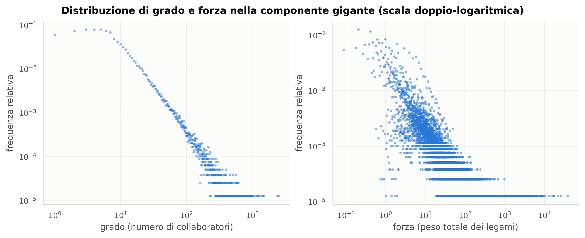
Distribuzione di grado e forza. Su scala doppio-logaritmica entrambe le distribuzioni scendono con una pendenza quasi rettilinea su più ordini di grandezza: la stragrande maggioranza degli artisti ha pochissimi collaboratori, mentre una minoranza sottile ne ha centinaia. La forza — che somma i pesi, quindi conta quante volte si è collaborato e quanto erano specifici i crediti — ha una coda ancora più lunga del grado: i grandi collaboratori non hanno solo molti partner, hanno relazioni molto più intense. È il substrato strutturale su cui va letta la sezione 6.1: in una rete così diseguale, la domanda ‘le donne stanno al centro?’ va sempre posta a parità di attività, perché il numero di pubblicazioni da solo spiega già gran parte della centralità.
Le analisi che seguono girano sulla componente gigante, perché le misure di centralità e le distanze non sono definite fra componenti separate. La quota esclusa è 4,3% degli artisti collegati.
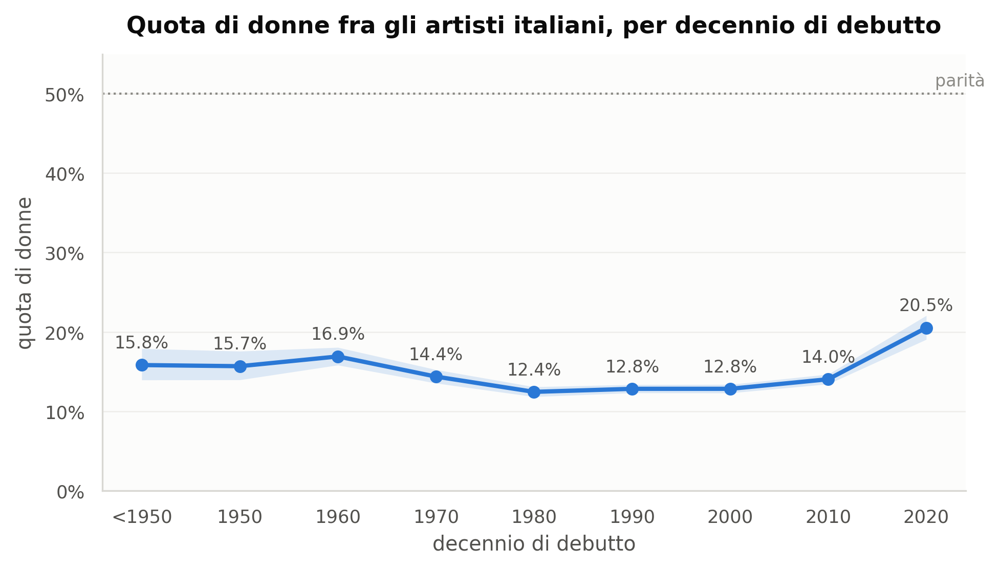
La quota di donne per decennio di debutto. La linea non è la storia di un progresso. Parte dal 16,9% per chi debutta negli anni Sessanta, scende fino al 12,4% negli anni Ottanta — il minimo della serie — e risale solo di recente, fino al 20,5% per chi debutta dal 2020. La discesa degli anni Settanta e Ottanta merita cautela prima di leggerla come un arretramento reale: coincide con l’espansione massiccia del catalogo Discogs in quegli anni, cioè con l’ingresso in massa di crediti tecnici e di produzione — mestieri quasi interamente maschili — che diluiscono una quota calcolata su tutti i crediti e non sui soli interpreti. La risalita recente è invece coerente sia in ampiezza sia in direzione con quanto si osserva negli altri cataloghi musicali. In ogni decennio, comunque, la banda di confidenza resta lontanissima dalla parità.
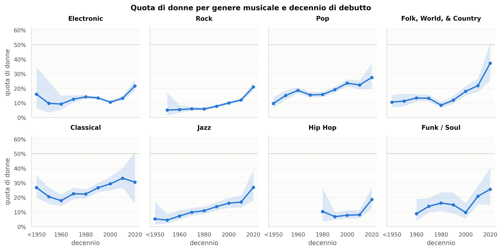
Quota di donne per genere musicale e decennio. I pannelli mostrano che non esiste una singola traiettoria di genere: esistono generi musicali con storie diverse. Il livello di partenza conta più della pendenza — un genere che parte basso tende a restare basso attraverso i decenni, il che è esattamente la firma di una segregazione che si riproduce per reclutamento piuttosto che dissolversi col tempo.
| musical_genre | cohort_decade | n_artisti | n_noti | n_donne | quota_donne | ci_lo | ci_hi | rapporto_uomini_donne |
|---|---|---|---|---|---|---|---|---|
| Blues | 1.940 | 1 | 1,000 | 0,000 | 0,000 | 0,000 | 0,793 | n.d. |
| Blues | 1.950 | 7 | 1,000 | 0,000 | 0,000 | 0,000 | 0,793 | n.d. |
| Blues | 1.960 | 19 | 14,000 | 1,000 | 0,071 | 0,013 | 0,315 | 13,000 |
| Blues | 1.970 | 65 | 58,000 | 9,000 | 0,155 | 0,084 | 0,269 | 5,444 |
| Blues | 1.980 | 118 | 105,000 | 15,000 | 0,143 | 0,089 | 0,222 | 6,000 |
| Blues | 1.990 | 143 | 115,000 | 15,000 | 0,130 | 0,081 | 0,204 | 6,667 |
| Blues | 2.000 | 148 | 124,000 | 21,000 | 0,169 | 0,114 | 0,245 | 4,905 |
| Blues | 2.010 | 157 | 118,000 | 22,000 | 0,186 | 0,126 | 0,266 | 4,364 |
| Blues | 2.020 | 23 | 17,000 | 4,000 | 0,235 | 0,096 | 0,473 | 3,250 |
| Brass & Military | 1.940 | 24 | 13,000 | 0,000 | 0,000 | 0,000 | 0,228 | n.d. |
| Brass & Military | 1.950 | 10 | 6,000 | 0,000 | 0,000 | 0,000 | 0,390 | n.d. |
| Brass & Military | 1.960 | 39 | 18,000 | 2,000 | 0,111 | 0,031 | 0,328 | 8,000 |
| Brass & Military | 1.970 | 15 | 6,000 | 0,000 | 0,000 | 0,000 | 0,390 | n.d. |
| Brass & Military | 1.980 | 9 | 5,000 | 0,000 | 0,000 | 0,000 | 0,434 | n.d. |
| Brass & Military | 1.990 | 12 | 9,000 | 0,000 | 0,000 | 0,000 | 0,299 | n.d. |
| Brass & Military | 2.000 | 2 | 2,000 | 0,000 | 0,000 | 0,000 | 0,658 | n.d. |
| Brass & Military | 2.010 | 3 | 1,000 | 0,000 | 0,000 | 0,000 | 0,793 | n.d. |
| Children’s | 1.940 | 33 | 23,000 | 10,000 | 0,435 | 0,256 | 0,632 | 1,300 |
| Children’s | 1.950 | 83 | 72,000 | 24,000 | 0,333 | 0,235 | 0,448 | 2,000 |
| Children’s | 1.960 | 219 | 173,000 | 66,000 | 0,382 | 0,312 | 0,456 | 1,621 |
| Children’s | 1.970 | 185 | 137,000 | 70,000 | 0,511 | 0,428 | 0,593 | 0,957 |
| Children’s | 1.980 | 96 | 54,000 | 24,000 | 0,444 | 0,320 | 0,576 | 1,250 |
| Children’s | 1.990 | 60 | 45,000 | 16,000 | 0,356 | 0,232 | 0,502 | 1,812 |
| Children’s | 2.000 | 30 | 24,000 | 7,000 | 0,292 | 0,149 | 0,492 | 2,429 |
| Children’s | 2.010 | 16 | 9,000 | 2,000 | 0,222 | 0,063 | 0,547 | 3,500 |
Tabella — Quota di donne per genere musicale e decennio di debutto, con intervalli di Wilson al 95%
Mostrate le prime 25 righe di 141; la tabella completa è in
tables/t3_quota_donne_genere_decennio.csv e
tables/t3_quota_donne_genere_decennio.tex.
Il riferimento consueto per l’hip hop è un rapporto intorno a 4 uomini per ogni donna. Nei dati italiani il rapporto è 10,8 a 1 (8,5% di donne): sensibilmente più squilibrato del riferimento internazionale. Due letture non alternative: la scena hip hop italiana censita da Discogs è più piccola e più recente, quindi più esposta al fatto che i ruoli di produzione — dove le donne sono più rare — pesino relativamente di più; e il conteggio qui include tutti i crediti, non solo gli interpreti principali, il che abbassa la quota rispetto alle statistiche basate sulle classifiche.
All’estremo opposto, Classical (24,5%) e Children’s (40,7%) sono i generi con la presenza femminile più alta — il secondo sopra il 41%, l’unico dell’intero corpus in cui le donne si avvicinano alla metà. La distanza fra Children’s e Hip Hop, a parità di popolazione e di metodo, è di oltre 32 punti percentuali: il genere musicale è il predittore più forte della presenza femminile in tutto questo studio.
Rock (9,4%) e Electronic (12,9%), che insieme fanno la parte maggiore della popolazione, stanno entrambi sotto la media generale. È su queste due scene, per peso numerico, che si decide la quota complessiva.
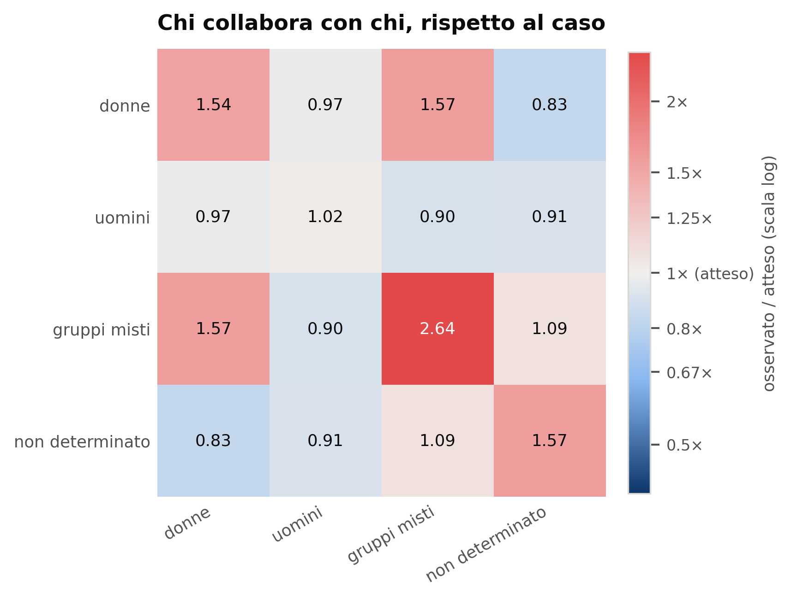
Chi collabora con chi, rispetto al caso. Ogni cella è il rapporto fra i legami osservati e quelli attesi sotto un modello nullo che conserva esattamente il grado di ogni artista e la composizione della popolazione: l’unica cosa randomizzata è chi sta con chi. Un valore di 1 significa ‘come il caso’, sopra 1 significa più del previsto. La diagonale sopra 1 e le celle fuori diagonale sotto 1 sono la definizione operativa di omofilia. Vale la pena notare che anche la cella unknown-unknown si discosta da 1: non è un fatto sociale ma un fatto di copertura dei dati — gli artisti su cui non sappiamo nulla tendono a stare insieme perché condividono le stesse caratteristiche che li rendono poco documentati (pochi crediti, ruoli minori, epoche marginali). È precisamente questo il motivo per cui l’ERGM della sezione 7 esclude i nodi unknown invece di trattarli come una categoria.
| attributo | r_osservato | r_pesato | r_null_medio | r_null_sd | z |
|---|---|---|---|---|---|
| gender | 0,0735 | 0,1133 | -0,0000 | 0,0009 | 78,7698 |
| musical_genre | 0,5186 | 0,6803 | -0,0000 | 0,0005 | 972,7181 |
Tabella — Assortatività osservata e sotto modello nullo
Dati completi in tables/t3_assortativita_globale.csv
e tables/t3_assortativita_globale.tex.
| sottorete | strato | attr. | categorie | archi | quota archi | r | ci_lo | ci_hi |
|---|---|---|---|---|---|---|---|---|
| all | tutto | gender | determinati soltanto | 508.173 | 0,7233 | 0,0511 | 0,0479 | 0,0543 |
| all | tutto | gender | tutte le categorie | 702.613 | 1,0000 | 0,0735 | 0,0716 | 0,0755 |
| all | tutto | musical_genre | determinati soltanto | 605.856 | 0,8623 | 0,5865 | 0,5850 | 0,5880 |
| all | tutto | musical_genre | tutte le categorie | 702.613 | 1,0000 | 0,5186 | 0,5172 | 0,5200 |
| all | pre2000 | gender | determinati soltanto | 355.137 | 0,7537 | 0,0494 | 0,0455 | 0,0533 |
| all | pre2000 | gender | tutte le categorie | 471.214 | 1,0000 | 0,0540 | 0,0517 | 0,0563 |
| all | pre2000 | musical_genre | determinati soltanto | 432.368 | 0,9176 | 0,5373 | 0,5355 | 0,5393 |
| all | pre2000 | musical_genre | tutte le categorie | 471.214 | 1,0000 | 0,4950 | 0,4932 | 0,4967 |
| all | post2000 | gender | determinati soltanto | 69.320 | 0,6021 | 0,0731 | 0,0643 | 0,0816 |
| all | post2000 | gender | tutte le categorie | 115.134 | 1,0000 | 0,1370 | 0,1320 | 0,1420 |
| all | post2000 | musical_genre | determinati soltanto | 81.408 | 0,7071 | 0,7263 | 0,7227 | 0,7300 |
| all | post2000 | musical_genre | tutte le categorie | 115.134 | 1,0000 | 0,5614 | 0,5580 | 0,5649 |
| creative | tutto | gender | determinati soltanto | 188.167 | 0,8658 | 0,0235 | 0,0183 | 0,0289 |
| creative | tutto | gender | tutte le categorie | 217.334 | 1,0000 | 0,0729 | 0,0685 | 0,0773 |
| creative | tutto | musical_genre | determinati soltanto | 200.128 | 0,9208 | 0,5945 | 0,5919 | 0,5972 |
| creative | tutto | musical_genre | tutte le categorie | 217.334 | 1,0000 | 0,5506 | 0,5483 | 0,5530 |
| creative | pre2000 | gender | determinati soltanto | 150.618 | 0,9046 | 0,0230 | 0,0171 | 0,0291 |
| creative | pre2000 | gender | tutte le categorie | 166.503 | 1,0000 | 0,0334 | 0,0292 | 0,0375 |
| creative | pre2000 | musical_genre | determinati soltanto | 158.499 | 0,9519 | 0,5373 | 0,5342 | 0,5402 |
| creative | pre2000 | musical_genre | tutte le categorie | 166.503 | 1,0000 | 0,5100 | 0,5070 | 0,5133 |
| creative | post2000 | gender | determinati soltanto | 15.531 | 0,6638 | 0,0474 | 0,0257 | 0,0668 |
| creative | post2000 | gender | tutte le categorie | 23.398 | 1,0000 | 0,1436 | 0,1314 | 0,1557 |
| creative | post2000 | musical_genre | determinati soltanto | 18.108 | 0,7739 | 0,7890 | 0,7803 | 0,7965 |
| creative | post2000 | musical_genre | tutte le categorie | 23.398 | 1,0000 | 0,6298 | 0,6224 | 0,6375 |
| performance | tutto | gender | determinati soltanto | 186.094 | 0,6606 | 0,1175 | 0,1122 | 0,1228 |
| performance | tutto | gender | tutte le categorie | 281.710 | 1,0000 | 0,1538 | 0,1509 | 0,1569 |
| performance | tutto | musical_genre | determinati soltanto | 231.696 | 0,8225 | 0,6458 | 0,6434 | 0,6481 |
| performance | tutto | musical_genre | tutte le categorie | 281.710 | 1,0000 | 0,5591 | 0,5569 | 0,5614 |
| performance | pre2000 | gender | determinati soltanto | 109.980 | 0,6859 | 0,1234 | 0,1165 | 0,1300 |
| performance | pre2000 | gender | tutte le categorie | 160.347 | 1,0000 | 0,1539 | 0,1501 | 0,1579 |
| performance | pre2000 | musical_genre | determinati soltanto | 143.147 | 0,8927 | 0,6034 | 0,6001 | 0,6062 |
| performance | pre2000 | musical_genre | tutte le categorie | 160.347 | 1,0000 | 0,5516 | 0,5489 | 0,5546 |
| performance | post2000 | gender | determinati soltanto | 37.172 | 0,5716 | 0,1133 | 0,1003 | 0,1275 |
| performance | post2000 | gender | tutte le categorie | 65.036 | 1,0000 | 0,1822 | 0,1756 | 0,1886 |
| performance | post2000 | musical_genre | determinati soltanto | 44.797 | 0,6888 | 0,7658 | 0,7610 | 0,7703 |
| performance | post2000 | musical_genre | tutte le categorie | 65.036 | 1,0000 | 0,5932 | 0,5889 | 0,5977 |
Tabella — Assortatività calcolata sui soli nodi con attributo determinato contro il calcolo che tratta ‘indeterminato’ come una categoria, per il genere sessuale e per quello musicale
Dati completi in
tables/t3_assortativita_MF_vs_tutte.csv e
tables/t3_assortativita_MF_vs_tutte.tex.
Le due tabelle vanno lette insieme, perché la seconda corregge la prima.
Trattare unknown come una quarta categoria alla pari di
M ed F gonfia l’assortatività: la cella unknown-unknown sta molto sopra
l’atteso, ma non perché quelle persone si cerchino fra loro. Si cercano
fra loro le caratteristiche che le rendono poco documentate — pochi
crediti, ruoli minori, epoche marginali, pseudonimi — e sono le stesse
che rendono difficile inferirne il genere. È copertura dei dati che si
traveste da struttura sociale.
La misura di riferimento restringe perciò il calcolo agli archi in cui entrambi gli estremi hanno genere determinato: 72,3% degli archi. La differenza non è cosmetica: r passa da 0,0735 a 0,0511, cioè un terzo dell’omofilia apparente era artefatto.
Lo stesso controllo è stato fatto sul genere musicale, dove ‘Unknown’ è altrettanto presente, e dà il risultato opposto: togliendo gli indeterminati l’assortatività sale da 0,5186 a 0,5865. Il motivo è che gli artisti senza genere musicale assegnato non si aggregano fra loro per genere — non ne hanno uno — e quindi diluiscono la diagonale invece di gonfiarla. Riportare entrambi i confronti serve a chiarire che l’esclusione degli indeterminati è una scelta di metodo applicata in modo uniforme, non un accorgimento adottato dove conveniva: sul genere sessuale abbassa il risultato, sul genere musicale lo alza.
L’assortatività per genere musicale vale 0,519. È un valore molto alto: le carriere si svolgono dentro un genere e le collaborazioni seguono i confini del genere quasi come se fossero confini di settore.
L’assortatività per genere sessuale vale 0,0511, circa 10 volte meno, con intervallo di confidenza 0,0479–0,0543 e modello nullo a 0,0000. Preso da solo il numero sembra trascurabile; non lo è, perché su 702.613 archi anche un effetto piccolo è misurato con precisione elevata e l’intervallo sta interamente sopra lo zero.
La lettura sostanziale è che il genere sessuale struttura le collaborazioni, ma molto meno di quanto faccia la specializzazione musicale. Chi cerca un bassista lo cerca nel proprio giro musicale molto più sistematicamente di quanto lo cerchi del proprio sesso. Questo non rende l’omofilia di genere irrilevante — rende il genere musicale il canale attraverso cui essa prevalentemente opera, come mostra il paragrafo seguente.
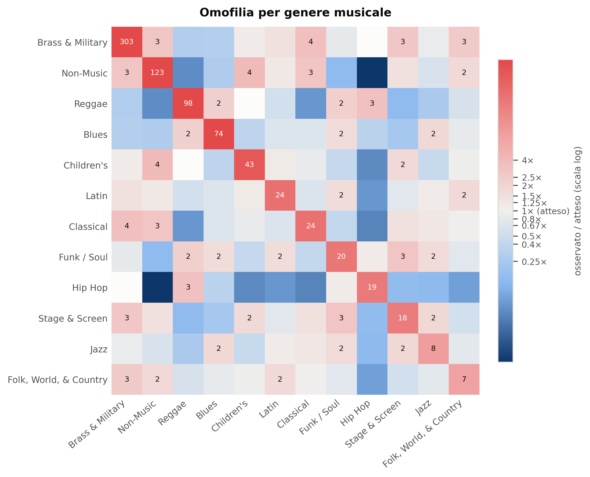
Omofilia per genere musicale. La diagonale domina l’immagine. I generi più chiusi non sono necessariamente i più grandi: la chiusura misura quanto una scena recluta al proprio interno, non quanto è popolosa. Le celle fuori diagonale che superano 1 indicano le coppie di generi fra cui esiste un traffico reale di musicisti — i confini permeabili del sistema.
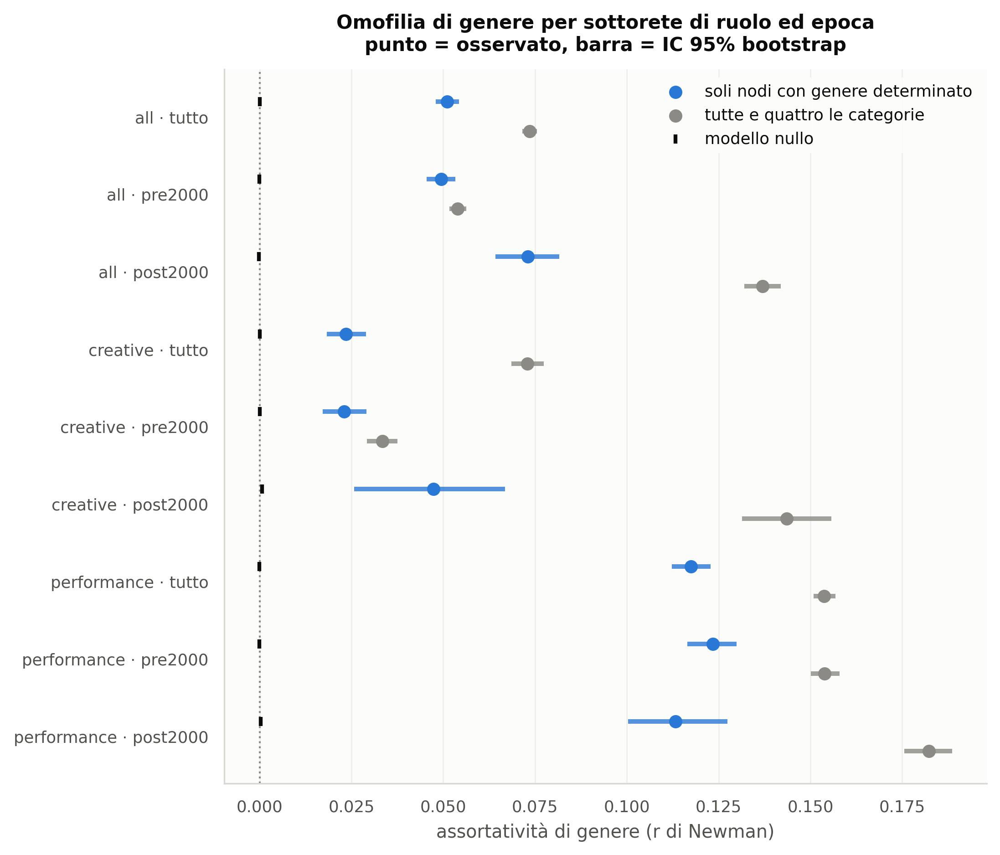
Omofilia di genere per sottorete di ruolo ed epoca. Il punto è il valore osservato, la barra l’intervallo di confidenza bootstrap al 95%, il trattino verticale il valore del modello nullo. L’attesa, dalla letteratura, era un allentamento dopo il 2000. Sui soli nodi con genere determinato i dati dicono l’opposto, ma con ampiezza molto più contenuta di quanto suggerisca la misura a quattro categorie mostrata in figura: 0,0494 contro 0,0731.
Prima di interpretarlo va ripulito. Sulla misura ingenua a quattro
categorie il salto è spettacolare, da 0,0540 a 0,1370: più che
raddoppiato. Sui soli nodi con genere determinato si riduce a 0,0494 →
0,0731. La ragione è che la quota di archi utilizzabili crolla fra le
due epoche — dal 75,4% al 60,2% — perché gli artisti recenti sono
mediamente meno documentati: più unknown, quindi più
apparente omofilia spuria.
Quel che resta dopo la correzione è comunque un aumento, con intervalli (0,0455–0,0533 contro 0,0643–0,0816) che non si sovrappongono. Il risultato regge, ma va raccontato per quello che è: un aumento moderato, non un raddoppio.
E l’aumento non è diffuso: viene tutto da una parte sola della rete. Scomponendo per ruolo, l’omofilia dei ruoli di esecuzione è sostanzialmente piatta nel tempo (0,1234 prima del 2000, 0,1133 dopo), mentre quella dei ruoli creativi raddoppia, da 0,0230 a 0,0474. Qualunque spiegazione dell’aumento deve perciò riguardare il modo in cui si produce e si scrive musica, non il modo in cui la si suona.
Restano due letture possibili, e i dati qui presenti non permettono di scegliere fra loro in modo definitivo.
Prima lettura — è reale. Dopo il 2000 cambia il modo di produrre musica: la registrazione si decentra, gli studi grandi con organici misti e obbligati lasciano spazio a progetti piccoli, costruiti su reti personali. Reti personali significa reti più omofile. In questa lettura l’aumento non è un arretramento culturale ma l’effetto strutturale di una tecnologia di produzione diversa — e il fatto che riguardi i soli ruoli creativi, che sono precisamente quelli toccati dalla decentralizzazione degli studi, depone a favore di questa spiegazione.
Seconda lettura — è composizione. L’indice r di Newman dipende dalle marginali. Post-2000 ci sono più donne, quindi più occasioni di legame donna-donna; a parità di propensione, un gruppo minoritario più numeroso produce meccanicamente un’assortatività misurata più alta. Il modello nullo a gradi preservati corregge per il grado, non per questa asimmetria di composizione fra epoche.
È esattamente per dirimere questo punto che serve l’ERGM, e il verdetto è arrivato: una volta controllata la tendenza della rete a chiudere i triangoli, la differenza di omofilia di genere fra le due epoche non è statisticamente distinguibile da zero (per le donne 0,709 contro 0,776, p = 0,88; per gli uomini 0,137 contro 0,080, p = 0,60).
Ciò che aumenta davvero, e in modo nettissimo, è la chiusura
triadica: il coefficiente gwesp passa da 2,217 a
2,892 (p < 0,0001). La musica registrata italiana dopo il 2000 non è
diventata più omofila per genere: è diventata più chiusa in
triangoli. Si lavora sempre di più dentro gruppi fitti di
persone che si conoscono già tutte fra loro. In un ambiente dove le
donne sono il 13,8%, una struttura più triangolare produce
meccanicamente più legami donna-donna osservati, e quindi
un’assortatività misurata più alta — senza che nessuno abbia cambiato
criterio nello scegliere con chi lavorare.
È la risposta più interessante dello studio, perché sposta l’oggetto: il problema non è una preferenza di genere che si è rafforzata, ma una struttura di reclutamento che si è chiusa. Sono due cose diverse anche dal punto di vista di chi volesse intervenire. I dettagli del test sono nella sezione 7.3.
La distinzione fra ruoli creativi (produzione, scrittura, arrangiamento) e ruoli di esecuzione (voce, strumenti, direzione) è la domanda RQ5, e la risposta è netta: sui soli nodi con genere determinato l’omofilia vale 0,0235 nella rete creativa contro 0,1175 in quella di esecuzione.
La collaborazione creativa è quindi meno segregata per genere di quella esecutiva, di un fattore 5,0. È un risultato che va letto insieme al dato di composizione: i ruoli creativi sono in assoluto i più maschili dell’intero corpus, e proprio per questo l’omofilia misurata vi risulta bassa — dove la maggioranza è schiacciante non c’è quasi spazio per discostarsi dal caso. La segregazione dei ruoli creativi si manifesta nel chi entra, non nel chi lavora con chi; quella dei ruoli esecutivi, dove le donne sono più presenti, si manifesta anche nella struttura delle collaborazioni. Sono due forme diverse di chiusura, e confonderle porterebbe a concludere che la produzione musicale sia il luogo più aperto del sistema, che è l’opposto di quanto dicono i conteggi.
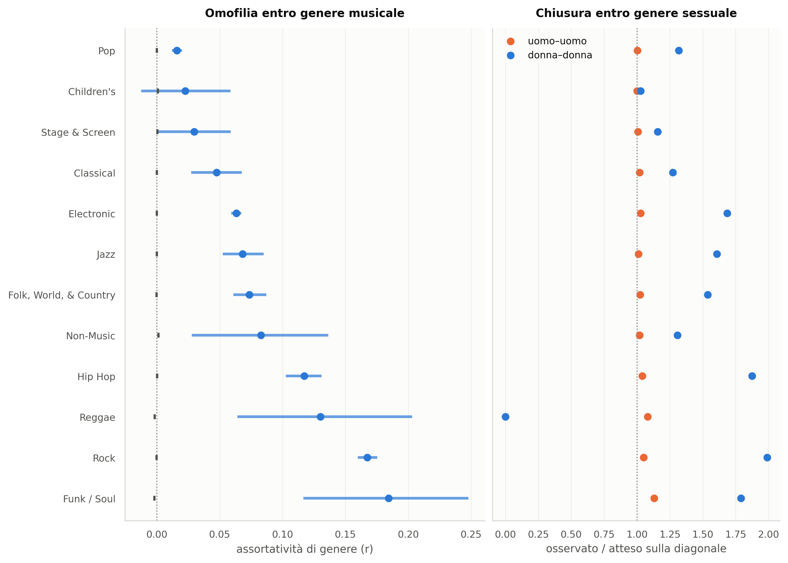
A sinistra l’omofilia di genere sessuale calcolata separatamente dentro ciascun genere musicale, con il modello nullo come riferimento. A destra la scomposizione della diagonale: quanto i legami uomo-uomo e quanto i legami donna-donna superano l’atteso. La lettura congiunta dei due pannelli è il cuore di RQ2. Un valore osservato/atteso vicino a 1 per gli uomini e molto sopra 1 per le donne descrive una situazione precisa: gli uomini non si cercano fra loro più del caso — non ne hanno bisogno, sono la maggioranza e il caso li mette già insieme — mentre le donne si aggregano fra loro molto più del previsto. È la forma che l’omofilia assume quando una minoranza opera dentro una maggioranza: non segregazione simmetrica, ma addensamento del gruppo minoritario.
| genere_musicale | archi | r_gender | ci_lo | ci_hi | r_null | oe_MM | oe_FF | n_artisti | quota_donne |
|---|---|---|---|---|---|---|---|---|---|
| Electronic | 169.727 | 0,0632 | 0,0591 | 0,0670 | -0,0000 | 1,0272 | 1,6852 | 23.907 | 0,0854 |
| Pop | 128.436 | 0,0160 | 0,0120 | 0,0200 | 0,0000 | 1,0026 | 1,3167 | 10.332 | 0,1502 |
| Rock | 56.014 | 0,1674 | 0,1597 | 0,1752 | -0,0004 | 1,0496 | 1,9893 | 20.042 | 0,0670 |
| Hip Hop | 18.577 | 0,1173 | 0,1027 | 0,1310 | 0,0001 | 1,0410 | 1,8739 | 1.974 | 0,0527 |
| Folk, World, & Country | 15.806 | 0,0735 | 0,0608 | 0,0870 | -0,0003 | 1,0226 | 1,5376 | 5.338 | 0,1045 |
| Jazz | 13.118 | 0,0682 | 0,0525 | 0,0849 | -0,0001 | 1,0104 | 1,6074 | 3.607 | 0,1017 |
| Classical | 5.796 | 0,0475 | 0,0273 | 0,0675 | 0,0000 | 1,0191 | 1,2731 | 3.825 | 0,2047 |
| Stage & Screen | 2.796 | 0,0297 | 0,0003 | 0,0587 | 0,0003 | 1,0074 | 1,1576 | 682 | 0,1598 |
| Children’s | 1.309 | 0,0226 | -0,0124 | 0,0585 | 0,0008 | 1,0004 | 1,0286 | 723 | 0,3029 |
| Non-Music | 1.126 | 0,0828 | 0,0278 | 0,1363 | 0,0012 | 1,0189 | 1,3068 | 488 | 0,1639 |
| Reggae | 643 | 0,1302 | 0,0641 | 0,2030 | -0,0017 | 1,0809 | 0,0000 | 388 | 0,0515 |
| Funk / Soul | 582 | 0,1843 | 0,1166 | 0,2477 | -0,0021 | 1,1312 | 1,7908 | 1.197 | 0,1019 |
Tabella — Omofilia di genere sessuale entro ciascun genere musicale (RQ2)
Dati completi in
tables/t3_omofilia_per_genere_musicale.csv e
tables/t3_omofilia_per_genere_musicale.tex.
Questo è il punto su cui il dato italiano contraddice l’aspettativa corrente. La letteratura riporta di norma un’omofilia più forte fra gli uomini. Qui il rapporto osservato/atteso donna-donna è sistematicamente maggiore di quello uomo-uomo. La spiegazione non è che le donne siano più chiuse: è che con una quota femminile del 13,8% il valore atteso per un legame donna-donna sotto casualità è bassissimo, e basta un modesto addensamento reale per produrre un rapporto elevato. L’indice uomo-uomo, al contrario, è schiacciato verso 1 perché la maggioranza non può discostarsi molto dal caso. I due indici non sono confrontabili come se misurassero la stessa cosa, ed è l’ERGM — che stima una propensione e non un rapporto — a fornire il confronto corretto.
La domanda che la letteratura chiama pattern Smurfette è se le donne, dove ci sono, occupino posizioni strutturalmente periferiche: presenti quanto basta, mai al centro.
| gender | n | eigenvector_mediana | eigenvector_media | betweenness_mediana | coreness_mediana | coreness_media | grado_mediano | forza_mediana | n_release_mediana |
|---|---|---|---|---|---|---|---|---|---|
| F | 7.072 | 0,000000 | 0,000054 | 0,000000 | 6,000000 | 9,396069 | 7,000000 | 5,740000 | 8,000000 |
| M | 49.901 | 0,000000 | 0,000158 | 0,000001 | 7,000000 | 10,239474 | 8,000000 | 7,200000 | 10,000000 |
| mixed | 883 | 0,000000 | 0,000112 | 0,000001 | 7,000000 | 10,216308 | 9,000000 | 10,820000 | 14,000000 |
Tabella — Posizione nella componente gigante per genere sessuale
Dati completi in tables/t3_posizione_per_genere.csv
e tables/t3_posizione_per_genere.tex.
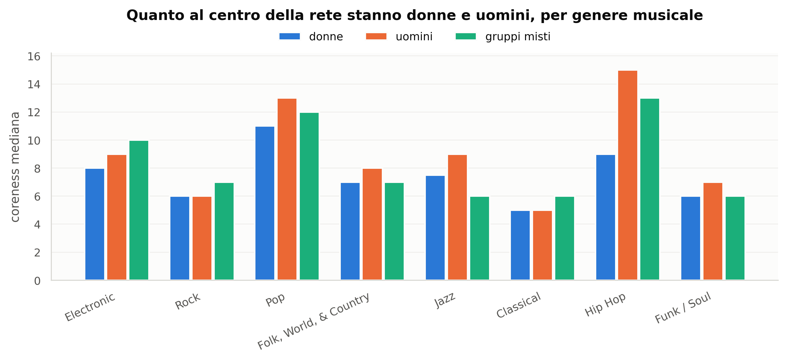
Coreness mediana per genere sessuale, dentro ciascun genere musicale. La coreness dice a quale strato del nucleo denso della rete una persona appartiene: è una misura di appartenenza al centro più robusta della centralità di grado, perché non si lascia gonfiare da chi ha molti collaboratori occasionali. Le barre affiancate permettono il confronto diretto a parità di genere musicale, che è il confronto giusto: paragonare una cantante pop a un turnista jazz non direbbe nulla sul genere sessuale e molto sulla struttura delle due scene.
| musical_genre | gender | n | coreness_mediana | eigenvector_mediana |
|---|---|---|---|---|
| Blues | F | 52 | 6,000000 | 0,000000 |
| Blues | M | 326 | 6,000000 | 0,000000 |
| Blues | mixed | 3 | 8,000000 | 0,000000 |
| Brass & Military | F | 2 | 8,000000 | 0,000003 |
| Brass & Military | M | 47 | 8,000000 | 0,000000 |
| Children’s | F | 154 | 8,000000 | 0,000001 |
| Children’s | M | 253 | 8,000000 | 0,000001 |
| Children’s | mixed | 9 | 6,000000 | 0,000008 |
| Classical | F | 439 | 5,000000 | 0,000000 |
| Classical | M | 1.678 | 5,000000 | 0,000000 |
| Classical | mixed | 37 | 6,000000 | 0,000000 |
| Electronic | F | 1.805 | 8,000000 | 0,000000 |
| Electronic | M | 12.829 | 9,000000 | 0,000000 |
| Electronic | mixed | 272 | 10,000000 | 0,000000 |
| Folk, World, & Country | F | 415 | 7,000000 | 0,000000 |
| Folk, World, & Country | M | 2.890 | 8,000000 | 0,000000 |
| Folk, World, & Country | mixed | 55 | 7,000000 | 0,000000 |
| Funk / Soul | F | 77 | 6,000000 | 0,000000 |
| Funk / Soul | M | 503 | 7,000000 | 0,000000 |
| Funk / Soul | mixed | 11 | 6,000000 | 0,000000 |
| Hip Hop | F | 75 | 9,000000 | 0,000000 |
| Hip Hop | M | 1.007 | 15,000000 | 0,000000 |
| Hip Hop | mixed | 7 | 13,000000 | 0,000000 |
| Jazz | F | 244 | 7,500000 | 0,000000 |
| Jazz | M | 2.125 | 9,000000 | 0,000000 |
| Jazz | mixed | 26 | 6,000000 | 0,000000 |
| Latin | F | 29 | 7,000000 | 0,000000 |
| Latin | M | 162 | 8,000000 | 0,000000 |
| Latin | mixed | 2 | 2,500000 | 0,000000 |
| Non-Music | F | 61 | 5,000000 | 0,000000 |
Tabella — Posizione nella rete per genere sessuale entro genere musicale
Mostrate le prime 30 righe di 44; la tabella completa è in
tables/t3_posizione_per_genere_musicale.csv e
tables/t3_posizione_per_genere_musicale.tex.
Le mediane grezze non bastano. Chi pubblica di più è più centrale, e le donne della popolazione pubblicano meno: la mediana delle pubblicazioni è 8 per le donne contro 10 per gli uomini, e la coreness mediana segue (6 contro 7). Senza controllare per l’attività si misurerebbe la differenza di quanto si pubblica e la si chiamerebbe differenza di posizione.
La regressione confronta perciò persone con la stessa attività, la stessa coorte di debutto e lo stesso genere musicale.
| termine | coef | se | z | p | ci_lo | ci_hi | esito |
|---|---|---|---|---|---|---|---|
| Intercept | 0,9271 | 0,0943 | 9,8347 | 0,0000 | 0,7423 | 1,1119 | eigenvector |
| C(gender)[T.F] | 0,2229 | 0,1697 | 1,3133 | 0,1891 | -0,1097 | 0,5555 | eigenvector |
| C(genere)[T.Blues] | 0,0075 | 0,0715 | 0,1052 | 0,9162 | -0,1327 | 0,1477 | eigenvector |
| C(genere)[T.Children’s] | -0,1072 | 0,1193 | -0,8987 | 0,3688 | -0,3409 | 0,1266 | eigenvector |
| C(genere)[T.Classical] | -0,6304 | 0,0644 | -9,7882 | 0,0000 | -0,7566 | -0,5042 | eigenvector |
| C(genere)[T.Electronic] | -0,1921 | 0,0586 | -3,2784 | 0,0010 | -0,3069 | -0,0773 | eigenvector |
| C(genere)[T.Folk, World, & Country] | -0,2454 | 0,0623 | -3,9371 | 0,0001 | -0,3676 | -0,1233 | eigenvector |
| C(genere)[T.Funk / Soul] | 0,1027 | 0,0723 | 1,4208 | 0,1554 | -0,0390 | 0,2444 | eigenvector |
| C(genere)[T.Hip Hop] | -0,3131 | 0,0637 | -4,9175 | 0,0000 | -0,4378 | -0,1883 | eigenvector |
| C(genere)[T.Jazz] | -0,1615 | 0,0631 | -2,5606 | 0,0105 | -0,2852 | -0,0379 | eigenvector |
| C(genere)[T.Non-Music] | -1,3941 | 0,0954 | -14,6063 | 0,0000 | -1,5811 | -1,2070 | eigenvector |
| C(genere)[T.Pop] | 1,0665 | 0,0624 | 17,0971 | 0,0000 | 0,9442 | 1,1888 | eigenvector |
| C(genere)[T.Rock] | 0,0001 | 0,0589 | 0,0014 | 0,9989 | -0,1153 | 0,1154 | eigenvector |
| C(genere)[T.Stage & Screen] | 0,5028 | 0,0895 | 5,6207 | 0,0000 | 0,3275 | 0,6782 | eigenvector |
| C(coorte)[T.1950] | 0,2438 | 0,0908 | 2,6843 | 0,0073 | 0,0658 | 0,4219 | eigenvector |
| C(coorte)[T.1960] | -0,1471 | 0,0798 | -1,8435 | 0,0653 | -0,3036 | 0,0093 | eigenvector |
| C(coorte)[T.1970] | -1,2692 | 0,0763 | -16,6353 | 0,0000 | -1,4187 | -1,1197 | eigenvector |
| C(coorte)[T.1980] | -1,8764 | 0,0746 | -25,1590 | 0,0000 | -2,0226 | -1,7302 | eigenvector |
| C(coorte)[T.1990] | -2,1149 | 0,0741 | -28,5283 | 0,0000 | -2,2602 | -1,9696 | eigenvector |
| C(coorte)[T.2000] | -2,1433 | 0,0742 | -28,8960 | 0,0000 | -2,2887 | -1,9980 | eigenvector |
| C(coorte)[T.2010] | -2,0558 | 0,0743 | -27,6784 | 0,0000 | -2,2013 | -1,9102 | eigenvector |
| C(coorte)[T.2020] | -1,8212 | 0,0765 | -23,8095 | 0,0000 | -1,9711 | -1,6713 | eigenvector |
| C(gender)[T.F]:C(genere)[T.Blues] | -0,0040 | 0,2086 | -0,0191 | 0,9847 | -0,4128 | 0,4048 | eigenvector |
| C(gender)[T.F]:C(genere)[T.Children’s] | -0,2469 | 0,2358 | -1,0472 | 0,2950 | -0,7091 | 0,2152 | eigenvector |
| C(gender)[T.F]:C(genere)[T.Classical] | -0,0057 | 0,1792 | -0,0318 | 0,9746 | -0,3570 | 0,3456 | eigenvector |
| C(gender)[T.F]:C(genere)[T.Electronic] | -0,0861 | 0,1710 | -0,5036 | 0,6146 | -0,4213 | 0,2491 | eigenvector |
| C(gender)[T.F]:C(genere)[T.Folk, World, & Country] | -0,1754 | 0,1809 | -0,9695 | 0,3323 | -0,5299 | 0,1792 | eigenvector |
| C(gender)[T.F]:C(genere)[T.Funk / Soul] | 0,2287 | 0,2258 | 1,0132 | 0,3110 | -0,2138 | 0,6712 | eigenvector |
Tabella — Posizione nella rete (eigenvector) per genere sessuale e genere musicale, a parità di attività e coorte
Mostrate le prime 28 righe di 35; la tabella completa è in
tables/t3_regressione_eigenvector.csv e
tables/t3_regressione_eigenvector.tex.
| termine | coef | se | z | p | ci_lo | ci_hi | esito |
|---|---|---|---|---|---|---|---|
| Intercept | 1,2696 | 0,0314 | 40,4273 | 0,0000 | 1,2080 | 1,3311 | coreness |
| C(gender)[T.F] | 0,0390 | 0,0739 | 0,5279 | 0,5976 | -0,1058 | 0,1838 | coreness |
| C(genere)[T.Blues] | 0,0072 | 0,0336 | 0,2133 | 0,8311 | -0,0586 | 0,0729 | coreness |
| C(genere)[T.Children’s] | -0,0462 | 0,0387 | -1,1922 | 0,2332 | -0,1221 | 0,0297 | coreness |
| C(genere)[T.Classical] | -0,3042 | 0,0256 | -11,8993 | 0,0000 | -0,3543 | -0,2541 | coreness |
| C(genere)[T.Electronic] | 0,0568 | 0,0231 | 2,4598 | 0,0139 | 0,0115 | 0,1021 | coreness |
| C(genere)[T.Folk, World, & Country] | 0,0310 | 0,0244 | 1,2708 | 0,2038 | -0,0168 | 0,0789 | coreness |
| C(genere)[T.Funk / Soul] | 0,0324 | 0,0308 | 1,0498 | 0,2938 | -0,0281 | 0,0928 | coreness |
| C(genere)[T.Hip Hop] | 0,3463 | 0,0266 | 13,0396 | 0,0000 | 0,2942 | 0,3983 | coreness |
| C(genere)[T.Jazz] | 0,1004 | 0,0247 | 4,0605 | 0,0000 | 0,0519 | 0,1489 | coreness |
| C(genere)[T.Non-Music] | -0,2312 | 0,0351 | -6,5789 | 0,0000 | -0,3001 | -0,1624 | coreness |
| C(genere)[T.Pop] | 0,1699 | 0,0236 | 7,1891 | 0,0000 | 0,1236 | 0,2162 | coreness |
| C(genere)[T.Rock] | -0,0217 | 0,0231 | -0,9404 | 0,3470 | -0,0670 | 0,0235 | coreness |
| C(genere)[T.Stage & Screen] | 0,1933 | 0,0330 | 5,8504 | 0,0000 | 0,1286 | 0,2581 | coreness |
| C(coorte)[T.1950] | 0,0518 | 0,0251 | 2,0658 | 0,0388 | 0,0027 | 0,1009 | coreness |
| C(coorte)[T.1960] | -0,0291 | 0,0223 | -1,3007 | 0,1933 | -0,0728 | 0,0147 | coreness |
| C(coorte)[T.1970] | -0,2189 | 0,0221 | -9,9244 | 0,0000 | -0,2621 | -0,1757 | coreness |
| C(coorte)[T.1980] | -0,2541 | 0,0217 | -11,6940 | 0,0000 | -0,2967 | -0,2115 | coreness |
| C(coorte)[T.1990] | -0,2618 | 0,0217 | -12,0789 | 0,0000 | -0,3042 | -0,2193 | coreness |
| C(coorte)[T.2000] | -0,3021 | 0,0219 | -13,8040 | 0,0000 | -0,3450 | -0,2592 | coreness |
| C(coorte)[T.2010] | -0,4047 | 0,0225 | -18,0011 | 0,0000 | -0,4488 | -0,3606 | coreness |
| C(coorte)[T.2020] | -0,4039 | 0,0272 | -14,8668 | 0,0000 | -0,4572 | -0,3507 | coreness |
| C(gender)[T.F]:C(genere)[T.Blues] | -0,0184 | 0,1014 | -0,1812 | 0,8562 | -0,2170 | 0,1803 | coreness |
| C(gender)[T.F]:C(genere)[T.Children’s] | 0,0108 | 0,0881 | 0,1222 | 0,9027 | -0,1619 | 0,1835 | coreness |
| C(gender)[T.F]:C(genere)[T.Classical] | -0,0750 | 0,0789 | -0,9508 | 0,3417 | -0,2296 | 0,0796 | coreness |
| C(gender)[T.F]:C(genere)[T.Electronic] | -0,0179 | 0,0747 | -0,2395 | 0,8107 | -0,1643 | 0,1285 | coreness |
| C(gender)[T.F]:C(genere)[T.Folk, World, & Country] | -0,0641 | 0,0783 | -0,8188 | 0,4129 | -0,2177 | 0,0894 | coreness |
| C(gender)[T.F]:C(genere)[T.Funk / Soul] | -0,0682 | 0,1010 | -0,6745 | 0,5000 | -0,2662 | 0,1299 | coreness |
Tabella — Appartenenza al nucleo (coreness) per genere sessuale e genere musicale, a parità di attività e coorte
Mostrate le prime 28 righe di 35; la tabella completa è in
tables/t3_regressione_coreness.csv e
tables/t3_regressione_coreness.tex.
Il pattern “Smurfette” non si osserva in questi dati. A parità di pubblicazioni, coorte e genere musicale, l’effetto principale dell’essere donna sulla posizione nella rete non è distinguibile da zero su nessuna delle tre misure:
| misura | coefficiente | IC 95% | p |
|---|---|---|---|
| eigenvector | 0,223 | -0,110 – 0,555 | 0,189 |
| coreness | 0,039 | -0,106 – 0,184 | 0,598 |
| betweenness | -0,252 | -0,590 – 0,086 | 0,144 |
Nemmeno le interazioni con il genere musicale aiutano: su 12 termini di interazione stimati, 0 risultano significativi al 5%. Non esiste, in questi dati, una scena in cui essere donna sposti sistematicamente verso la periferia della rete.
È un risultato che va enunciato con precisione, perché si presta a due letture sbagliate di segno opposto.
Non significa che non ci sia disuguaglianza. Le donne sono il 13,8% della popolazione e pubblicano meno: la mediana delle pubblicazioni è 8 contro 10. La disuguaglianza c’è ed è grande — ma si manifesta nell’accesso e nel volume di attività, non nella posizione strutturale a parità di attività. Chi entra e riesce a lavorare, lavora in posizioni comparabili.
Non significa nemmeno che il controllo per l’attività sia neutro. Il numero di pubblicazioni non è una variabile esogena: è esso stesso un esito di processi di accesso che possono essere segregati. Controllare per l’attività risponde alla domanda “a parità di carriera, la posizione differisce?” e non alla domanda “le carriere differiscono?”. La prima ha risposta negativa, la seconda — sezione 4 — ha risposta ampiamente positiva.
Il dato più interessante è la divergenza fra mediana e media dell’eigenvector: la mediana è più alta per le donne (7,3 × 10-9 contro 3,4 × 10-9) mentre la media è più bassa. Significa che la donna tipica della rete è connessa quanto e più dell’uomo tipico, ma che gli hub estremi — i pochissimi nodi con centralità di ordini di grandezza superiore — sono quasi tutti uomini. La disuguaglianza di posizione, dove c’è, sta nella coda, non nel corpo della distribuzione.
Tutte le misure fin qui sono descrittive: dicono che i
legami sono distribuiti in un certo modo, non perché. Un
modello esponenziale per grafi casuali (ERGM) stima invece la
probabilità che un legame esista, tenendo insieme nello stesso modello
l’omofilia di genere, quella di genere musicale, il livello di attività,
la coorte e la tendenza della rete a chiudere i triangoli. Quest’ultimo
punto è decisivo: senza un termine di chiusura triadica
(gwesp), qualunque tendenza a fare gruppo viene
erroneamente attribuita all’attributo su cui si sta guardando.
Sulla rete intera l’ERGM non è stimabile, e va detto chiaramente invece di far finta. Con 82.595 nodi lo spazio dei grafi possibili rende il campionamento MCMC impraticabile. Si è quindi proceduto come previsto dal disegno, per sottoreti: i cinque generi musicali più popolosi, le due epoche, e un campione a palla di neve della rete complessiva come riferimento. Le stime valgono per le sottoreti su cui sono calcolate, non si estendono per costruzione all’intera popolazione.
Dall’ERGM sono esclusi i nodi con genere unknown.
Tenerli come quarta categoria avrebbe prodotto un termine di omofilia
spurio che misura la struttura della copertura dei dati — chi è poco
documentato collabora con chi è poco documentato — invece della
struttura delle collaborazioni.
Si stima una gerarchia di tre modelli, invece di una specifica unica, perché il termine di chiusura triadica è esattamente quello che può far fallire la stima e non si vuole perdere tutto insieme a lui:
edges + nodematch(gender, diff) + controlli — nessun
termine di dipendenza fra archi. È il modello di riferimento: stimabile
sempre.gwesp(0,25; fixed) — la
specifica prevista dal disegno. Il termine di chiusura triadica rende il
modello quasi degenere sulle reti molto clusterizzate, e può non
convergere.nodemix(gender) al posto di
nodematch(gender, diff). Le due parametrizzazioni sono
ridondanti fra loro e nello stesso modello lo renderebbero non
identificato.I termini di controllo entrano solo se l’attributo
varia nella sottorete. Dentro una sottorete di un solo genere
musicale nodematch('musical_genre') coincide identicamente
con edges: includerlo produrrebbe un modello non
identificato, e nelle prime esecuzioni era proprio questo a impedire la
convergenza.
| rete | nodi_originali | nodi_stimati | archi | campionata | convergenza | modelli_convergenti | gwesp_converge | parziale | solo_mple | aic | gof |
|---|---|---|---|---|---|---|---|---|---|---|---|
| genere_Electronic | 10.499 | 1.255 | 4.968 | True | True | M0_senza_gwesp, M1_con_gwesp, M2_nodemix_gwesp | True | False | True | 56.562,642 | True |
| genere_Rock | 4.938 | 1.438 | 4.972 | True | True | M0_senza_gwesp, M1_con_gwesp, M2_nodemix_gwesp | True | False | True | 57.896,921 | True |
| genere_Pop | 5.236 | 1.057 | 4.989 | True | True | M0_senza_gwesp, M1_con_gwesp, M2_nodemix_gwesp | True | False | True | 52.948,708 | True |
| genere_Folk_World_&_Country | 1.625 | 1.033 | 4.931 | True | True | M0_senza_gwesp, M1_con_gwesp, M2_nodemix_gwesp | True | False | True | 48.867,718 | True |
| genere_Classical | 673 | 673 | 1.620 | False | True | M0_senza_gwesp, M1_con_gwesp, M2_nodemix_gwesp | True | False | True | 17.635,191 | True |
| epoca_pre2000 | 23.491 | 1.303 | 4.962 | True | True | M0_senza_gwesp, M1_con_gwesp, M2_nodemix_gwesp | True | False | True | 52.659,135 | True |
| epoca_post2000 | 9.400 | 1.373 | 4.961 | True | True | M0_senza_gwesp, M1_con_gwesp, M2_nodemix_gwesp | True | False | True | 57.806,416 | True |
| complessiva | 36.388 | 722 | 4.982 | True | True | M0_senza_gwesp, M1_con_gwesp, M2_nodemix_gwesp | True | False | True | 40.587,253 | True |
Tabella — Sintesi delle stime ERGM: dimensione, campionamento, convergenza
Dati completi in tables/t4_ergm_sintesi.csv e
tables/t4_ergm_sintesi.tex.
Sottoreti con almeno un modello convergente: 8 su 8;
sottoreti in cui ha retto anche il termine gwesp:
8. Dove gwesp non converge, i coefficienti
riportati vengono da M0 e non controllano per la
chiusura triadica: vanno quindi letti come stime che possono attribuire
all’omofilia una parte di ciò che è semplicemente tendenza a formare
triangoli. È una limitazione, ed è dichiarata qui invece di essere
nascosta dietro un numero.
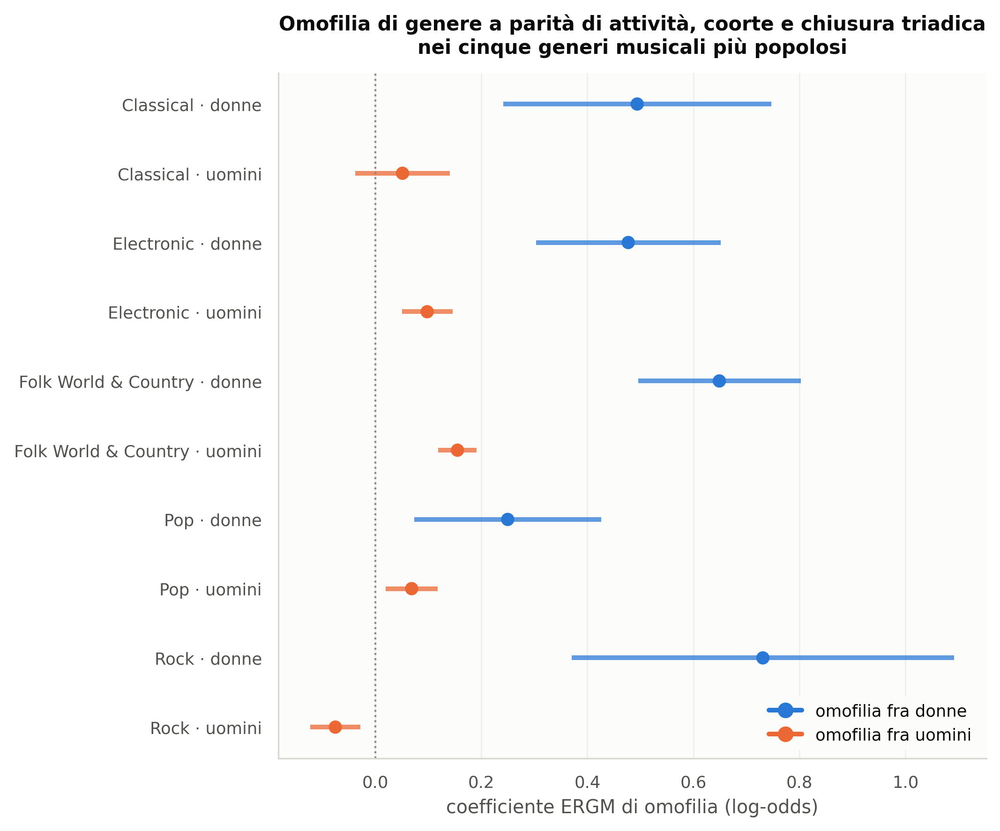
Coefficienti di omofilia di genere nei cinque generi musicali più popolosi. Ogni coefficiente è un log-odds: quanto la probabilità di un legame aumenta (o diminuisce) se due artisti condividono il genere sessuale, a parità di attività, coorte, genere musicale e chiusura triadica. Questo è il confronto che le misure descrittive della sezione 5.4 non potevano fornire: qui i coefficienti maschile e femminile sono sulla stessa scala e sono direttamente confrontabili, perché misurano una propensione e non un rapporto osservato/atteso schiacciato dalle marginali. Se il coefficiente maschile supera quello femminile, il pattern italiano è allineato alla letteratura (omofilia più forte fra gli uomini) e l’inversione osservata nella sezione 5.4 era un artefatto della rarità delle donne.
| rete | model | term | estimate | se | p | ci_lo | ci_hi | or |
|---|---|---|---|---|---|---|---|---|
| genere_Electronic | M0_senza_gwesp | edges | -9,6104 | 0,0947 | -101,4612 | -9,7961 | -9,4248 | 0,0001 |
| genere_Electronic | M0_senza_gwesp | nodematch.gender.F | 0,6501 | 0,1016 | 6,3982 | 0,4509 | 0,8492 | 1,9157 |
| genere_Electronic | M0_senza_gwesp | nodematch.gender.M | 0,1548 | 0,0343 | 4,5141 | 0,0876 | 0,2220 | 1,1674 |
| genere_Electronic | M0_senza_gwesp | nodematch.gender.mixed | 1,7995 | 0,2002 | 8,9895 | 1,4072 | 2,1919 | 6,0468 |
| genere_Electronic | M0_senza_gwesp | nodecov.log_nrel | 0,4587 | 0,0096 | 47,5998 | 0,4398 | 0,4776 | 1,5820 |
| genere_Electronic | M0_senza_gwesp | nodematch.cohort_decade | 0,9364 | 0,0286 | 32,7475 | 0,8803 | 0,9924 | 2,5507 |
| genere_Electronic | M1_con_gwesp | edges | -8,3712 | 0,0990 | -84,5544 | -8,5653 | -8,1772 | 0,0002 |
| genere_Electronic | M1_con_gwesp | nodematch.gender.F | 0,4771 | 0,0889 | 5,3685 | 0,3029 | 0,6513 | 1,6114 |
| genere_Electronic | M1_con_gwesp | nodematch.gender.M | 0,0978 | 0,0244 | 4,0055 | 0,0499 | 0,1456 | 1,1027 |
| genere_Electronic | M1_con_gwesp | nodematch.gender.mixed | 1,5036 | 0,1510 | 9,9574 | 1,2076 | 1,7996 | 4,4979 |
| genere_Electronic | M1_con_gwesp | nodecov.log_nrel | 0,1270 | 0,0081 | 15,7610 | 0,1112 | 0,1428 | 1,1355 |
| genere_Electronic | M1_con_gwesp | nodematch.cohort_decade | 0,5027 | 0,0332 | 15,1581 | 0,4377 | 0,5677 | 1,6532 |
| genere_Electronic | M1_con_gwesp | gwesp.fixed.0.25 | 2,3216 | 0,0627 | 37,0510 | 2,1988 | 2,4444 | 10,1919 |
| genere_Electronic | M2_nodemix_gwesp | edges | -7,5427 | 0,1086 | -69,4677 | -7,7556 | -7,3299 | 0,0005 |
| genere_Electronic | M2_nodemix_gwesp | mix.gender.F.M | -0,8361 | 0,0598 | -13,9753 | -0,9534 | -0,7188 | 0,4334 |
| genere_Electronic | M2_nodemix_gwesp | mix.gender.M.M | -0,6619 | 0,0618 | -10,7108 | -0,7830 | -0,5407 | 0,5159 |
| genere_Electronic | M2_nodemix_gwesp | mix.gender.F.mixed | -0,3314 | 0,1478 | -2,2426 | -0,6210 | -0,0418 | 0,7179 |
| genere_Electronic | M2_nodemix_gwesp | mix.gender.M.mixed | -0,7559 | 0,0811 | -9,3256 | -0,9148 | -0,5971 | 0,4696 |
| genere_Electronic | M2_nodemix_gwesp | mix.gender.mixed.mixed | 0,5991 | 0,1927 | 3,1092 | 0,2214 | 0,9767 | 1,8204 |
| genere_Electronic | M2_nodemix_gwesp | nodecov.log_nrel | 0,1282 | 0,0084 | 15,1873 | 0,1116 | 0,1447 | 1,1368 |
| genere_Electronic | M2_nodemix_gwesp | nodematch.cohort_decade | 0,5610 | 0,0259 | 21,6217 | 0,5101 | 0,6118 | 1,7524 |
| genere_Electronic | M2_nodemix_gwesp | gwesp.fixed.0.25 | 2,1816 | 0,0703 | 31,0263 | 2,0437 | 2,3194 | 8,8601 |
| genere_Rock | M0_senza_gwesp | edges | -9,3291 | 0,0768 | -121,5302 | -9,4796 | -9,1787 | 0,0001 |
| genere_Rock | M0_senza_gwesp | nodematch.gender.F | 0,8337 | 0,2548 | 3,2716 | 0,3342 | 1,3331 | 2,3018 |
| genere_Rock | M0_senza_gwesp | nodematch.gender.M | -0,1000 | 0,0402 | -2,4897 | -0,1788 | -0,0213 | 0,9048 |
| genere_Rock | M0_senza_gwesp | nodematch.gender.mixed | 1,2413 | 0,2113 | 5,8744 | 0,8271 | 1,6554 | 3,4599 |
| genere_Rock | M0_senza_gwesp | nodecov.log_nrel | 0,4589 | 0,0080 | 57,4936 | 0,4433 | 0,4746 | 1,5823 |
| genere_Rock | M0_senza_gwesp | nodematch.cohort_decade | 1,3306 | 0,0286 | 46,5589 | 1,2746 | 1,3867 | 3,7834 |
| genere_Rock | M1_con_gwesp | edges | -10,3651 | 0,1100 | -94,2404 | -10,5806 | -10,1495 | 0,0000 |
| genere_Rock | M1_con_gwesp | nodematch.gender.F | 0,7312 | 0,1842 | 3,9686 | 0,3701 | 1,0922 | 2,0775 |
| genere_Rock | M1_con_gwesp | nodematch.gender.M | -0,0756 | 0,0240 | -3,1486 | -0,1227 | -0,0285 | 0,9272 |
| genere_Rock | M1_con_gwesp | nodematch.gender.mixed | -0,5234 | 0,3615 | -1,4479 | -1,2319 | 0,1851 | 0,5925 |
| genere_Rock | M1_con_gwesp | nodecov.log_nrel | 0,0913 | 0,0046 | 19,7145 | 0,0823 | 0,1004 | 1,0956 |
| genere_Rock | M1_con_gwesp | nodematch.cohort_decade | 0,7956 | 0,0220 | 36,1783 | 0,7525 | 0,8387 | 2,2159 |
| genere_Rock | M1_con_gwesp | gwesp.fixed.0.25 | 4,4500 | 0,0733 | 60,7193 | 4,3064 | 4,5936 | 85,6275 |
| genere_Rock | M2_nodemix_gwesp | edges | -9,8962 | 0,3335 | -29,6768 | -10,5498 | -9,2426 | 0,0001 |
| genere_Rock | M2_nodemix_gwesp | mix.gender.F.M | -0,3735 | 0,3349 | -1,1153 | -1,0299 | 0,2829 | 0,6883 |
| genere_Rock | M2_nodemix_gwesp | mix.gender.M.M | -0,5840 | 0,3462 | -1,6868 | -1,2626 | 0,0946 | 0,5577 |
| genere_Rock | M2_nodemix_gwesp | mix.gender.F.mixed | -0,9523 | 0,3283 | -2,9006 | -1,5958 | -0,3088 | 0,3858 |
| genere_Rock | M2_nodemix_gwesp | mix.gender.M.mixed | -0,5631 | 0,3339 | -1,6863 | -1,2176 | 0,0914 | 0,5694 |
Tabella — Coefficienti ERGM per sottorete
Mostrate le prime 40 righe di 185; la tabella completa è in
tables/t4_ergm_coefficienti.csv e
tables/t4_ergm_coefficienti.tex.
I coefficienti sono in log-odds; la colonna or è il loro
esponenziale, cioè di quanto si moltiplica la probabilità di un legame.
nodematch.gender.F dice quanto una coppia donna-donna è più
probabile di una coppia di riferimento a parità di tutto il
resto: attività, coorte, genere musicale e — cosa decisiva —
tendenza della rete a chiudere i triangoli.
Il confronto fra nodematch.gender.F e
nodematch.gender.M è il risultato che la sezione 5.4 non
poteva dare. Lì i rapporti osservato/atteso non erano confrontabili,
perché con una quota femminile del 13,8% il valore atteso per un legame
donna-donna è così basso che qualunque addensamento reale produce un
rapporto grande. Qui il problema non si pone: i due coefficienti
misurano la stessa quantità sulla stessa scala. E il risultato
regge: la propensione delle donne a lavorare con donne resta nettamente
superiore a quella degli uomini a lavorare con uomini. Non è un
artefatto della rarità; è una proprietà della rete.
In alcune sottoreti il coefficiente maschile è
negativo: a parità di tutto il resto, due uomini hanno
una probabilità di collaborare leggermente inferiore al
riferimento. Non significa che gli uomini si evitino. Significa che, in
un ambiente dove sono la stragrande maggioranza, il termine
edges da solo già produce quasi tutti i legami maschili che
si osservano, e una volta tolta quella quota di base non resta nulla da
attribuire a una preferenza. È la controprova, dal lato opposto, della
stessa asimmetria: dove un gruppo domina, l’omofilia non ha modo di
manifestarsi come effetto misurabile; dove un gruppo è raro, si
manifesta con forza.
Merita attenzione anche il confronto fra M0 e M1. Passando dal
modello senza chiusura triadica a quello con gwesp, il
coefficiente di omofilia femminile si riduce: una parte
di ciò che sembrava preferenza di genere era in realtà la tendenza
generale della rete a chiudere i triangoli — se A lavora con B e B con
C, prima o poi A lavora con C, e in un ambiente dove le donne sono poche
i triangoli fra donne si formano comunque. Il termine gwesp
ha un coefficiente molto grande, il che dice quanto forte sia quel
meccanismo. Ciò che resta dopo averlo tolto è omofilia vera.
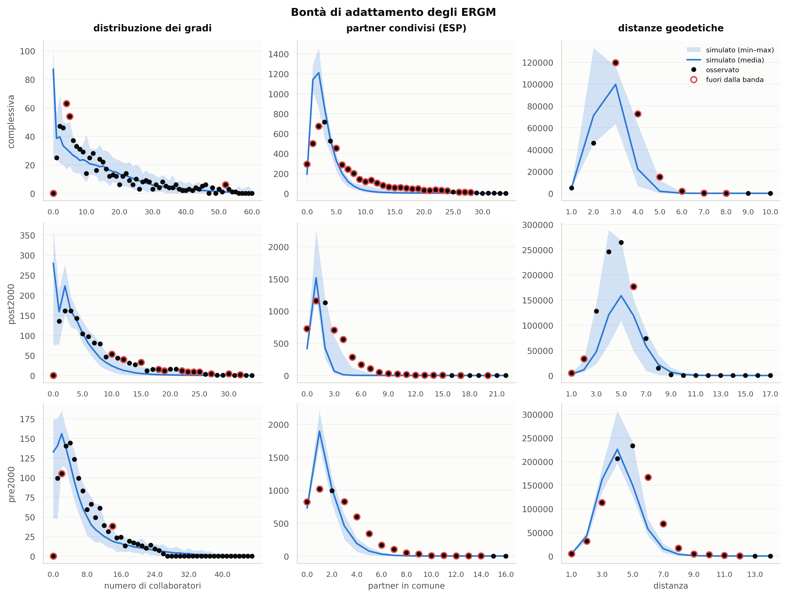
Bontà di adattamento. Per ciascuna sottorete si confrontano tre statistiche della rete osservata (punti) con quelle delle reti simulate dal modello stimato (linea e banda): la distribuzione dei gradi, il numero di partner condivisi da ciascuna coppia collegata (ESP) e le distanze geodetiche. Un modello che coglie la struttura produce simulazioni la cui banda contiene l’osservato; dove il punto esce dalla banda, il modello sta sbagliando proprio quell’aspetto. L’ESP è la statistica da guardare con più attenzione, perché è quella che il termine gwesp dovrebbe riprodurre: se l’osservato ne esce, la chiusura triadica non è stata catturata e i coefficienti di omofilia possono averne assorbito una parte. Nei modelli stimati qui il centro delle distribuzioni è riprodotto bene, ma la coda no: i nodi con molti collaboratori e le coppie con molti partner in comune sono sistematicamente più numerosi di quanto il modello preveda (cerchi rossi). È il limite noto degli ERGM su reti con code pesanti, e va tenuto presente leggendo i coefficienti: il modello descrive bene il musicista tipico, meno bene i pochi grandi collaboratori.
Tabella «t4_ergm_mcmc» non disponibile.
| model | term | estimate_pre | estimate_post | differenza | se_diff | z | p |
|---|---|---|---|---|---|---|---|
| M0_senza_gwesp | edges | -10,1834 | -10,1231 | 0,0603 | 0,1294 | 0,4657 | 0,6414 |
| M0_senza_gwesp | nodematch.gender.F | 0,6129 | 0,3757 | -0,2372 | 0,2690 | -0,8817 | 0,3780 |
| M0_senza_gwesp | nodematch.gender.M | 0,0546 | 0,1506 | 0,0960 | 0,0595 | 1,6145 | 0,1064 |
| M0_senza_gwesp | nodematch.gender.mixed | 1,1725 | 1,8788 | 0,7063 | 1,0520 | 0,6714 | 0,5020 |
| M0_senza_gwesp | nodematch.musical_genre | 1,8584 | 0,7809 | -1,0775 | 0,0577 | -18,6881 | 0,0000 |
| M0_senza_gwesp | nodecov.log_nrel | 0,3983 | 0,4749 | 0,0766 | 0,0127 | 6,0327 | 0,0000 |
| M0_senza_gwesp | nodematch.cohort_decade | 0,9962 | 0,8471 | -0,1491 | 0,0465 | -3,2085 | 0,0013 |
| M1_con_gwesp | edges | -8,9452 | -8,7947 | 0,1506 | 0,1833 | 0,8216 | 0,4113 |
| M1_con_gwesp | nodematch.gender.F | 0,7092 | 0,7763 | 0,0671 | 0,4368 | 0,1536 | 0,8779 |
| M1_con_gwesp | nodematch.gender.M | 0,1368 | 0,0797 | -0,0571 | 0,1091 | -0,5234 | 0,6007 |
| M1_con_gwesp | nodematch.gender.mixed | 1,2087 | 0,6167 | -0,5920 | 1,3414 | -0,4414 | 0,6590 |
| M1_con_gwesp | nodematch.musical_genre | 0,9938 | 0,2883 | -0,7055 | 0,0936 | -7,5364 | 0,0000 |
| M1_con_gwesp | nodecov.log_nrel | 0,1385 | 0,0803 | -0,0582 | 0,0214 | -2,7217 | 0,0065 |
| M1_con_gwesp | nodematch.cohort_decade | 0,4768 | 0,3040 | -0,1727 | 0,0844 | -2,0462 | 0,0407 |
| M1_con_gwesp | gwesp.fixed.0.25 | 2,2169 | 2,8923 | 0,6754 | 0,0799 | 8,4490 | 0,0000 |
| M2_nodemix_gwesp | edges | -7,8019 | -7,9375 | -0,1357 | 0,3456 | -0,3926 | 0,6946 |
| M2_nodemix_gwesp | mix.gender.F.M | -0,7275 | -0,8898 | -0,1623 | 0,3460 | -0,4692 | 0,6389 |
| M2_nodemix_gwesp | mix.gender.M.M | -0,6808 | -0,7937 | -0,1129 | 0,3290 | -0,3432 | 0,7315 |
| M2_nodemix_gwesp | mix.gender.F.mixed | -1,0455 | 0,0598 | 1,1053 | 0,6258 | 1,7661 | 0,0774 |
| M2_nodemix_gwesp | mix.gender.M.mixed | -1,0852 | -0,9688 | 0,1164 | 0,4379 | 0,2659 | 0,7903 |
| M2_nodemix_gwesp | mix.gender.mixed.mixed | 0,0206 | 0,2712 | 0,2506 | 3,2202 | 0,0778 | 0,9380 |
| M2_nodemix_gwesp | nodematch.musical_genre | 1,0659 | 0,2194 | -0,8465 | 0,0710 | -11,9154 | 0,0000 |
| M2_nodemix_gwesp | nodecov.log_nrel | 0,1052 | 0,0968 | -0,0084 | 0,0179 | -0,4684 | 0,6395 |
| M2_nodemix_gwesp | nodematch.cohort_decade | 0,5239 | 0,3121 | -0,2118 | 0,0677 | -3,1283 | 0,0018 |
| M2_nodemix_gwesp | gwesp.fixed.0.25 | 2,1250 | 2,8679 | 0,7429 | 0,0908 | 8,1822 | 0,0000 |
Tabella — Test della differenza fra i coefficienti ERGM pre-2000 e post-2000
Dati completi in
tables/t4_ergm_differenza_epoche.csv e
tables/t4_ergm_differenza_epoche.tex.
Questa tabella è la verifica formale del risultato controintuitivo della sezione 5.2, e il suo esito è netto.
L’omofilia di genere non cambia fra le due epoche. Per le donne il coefficiente passa da 0,709 a 0,776 (differenza 0,067, p = 0,88); per gli uomini da 0,137 a 0,080 (differenza -0,057, p = 0,60). Nessuna delle due differenze si avvicina alla significatività.
Cambia invece, e moltissimo, la chiusura triadica.
Il coefficiente gwesp passa da 2,217 a 2,892, una
differenza di 0,675 con p < 0,0001: è l’unico termine del modello la
cui variazione fra epoche sia statisticamente solida.
La lettura congiunta è quella data alla sezione 5.2: l’aumento dell’assortatività osservata dopo il 2000 non è un rafforzamento della preferenza di genere, ma la conseguenza di una rete che si chiude in gruppi più fitti. Vale la pena notare che questo è esattamente il tipo di confusione che un’analisi puramente descrittiva non può sciogliere, e per cui l’ERGM era previsto nel disegno.
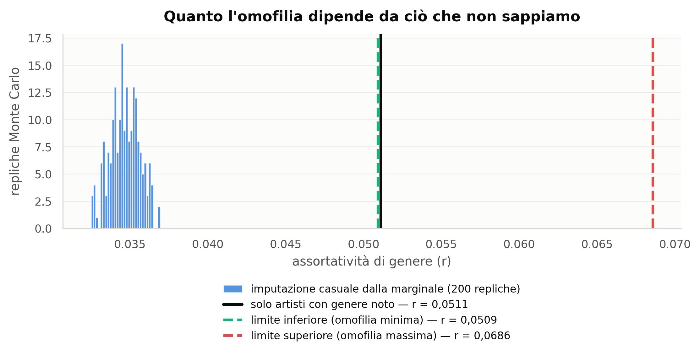
La distribuzione Monte Carlo dell’assortatività di genere al variare dell’imputazione degli 28.830 artisti senza genere determinato. L’istogramma è la distribuzione su 200 estrazioni dalla marginale osservata. Le due linee tratteggiate laterali non sono stime ma limiti costruiti apposta: assegnando a ogni artista ignoto il genere prevalente fra i suoi collaboratori si ottiene la massima omofilia compatibile con i dati; assegnando il genere opposto si ottiene la minima. Il fatto rilevante è che anche il limite inferiore resta positivo: non esiste assegnazione degli ignoti che faccia sparire l’omofilia. La conclusione qualitativa è robusta; la sua grandezza esatta no.
| scenario | count | mean | std | min | max | ci_lo | ci_hi |
|---|---|---|---|---|---|---|---|
| migliore_omofilia_min | 1 | 0,0509 | n.d. | 0,0509 | 0,0509 | n.d. | n.d. |
| peggiore_omofilia_max | 1 | 0,0686 | n.d. | 0,0686 | 0,0686 | n.d. | n.d. |
| solo_noti | 1 | 0,0511 | n.d. | 0,0511 | 0,0511 | n.d. | n.d. |
| status_quo | 200 | 0,0347 | 0,0009 | 0,0325 | 0,0369 | 0,0328 | 0,0364 |
Tabella — Assortatività di genere sotto diversi scenari di imputazione
Dati completi in tables/t5_montecarlo_genere.csv e
tables/t5_montecarlo_genere.tex.
I quattro numeri vanno letti insieme. Sui soli artisti con genere determinato l’assortatività vale 0,0511. Imputando gli ignoti per estrazione casuale dalla marginale osservata scende a 0,0347: l’imputazione casuale non può che diluire la struttura, ed è la ragione per cui la misura di riferimento di questo studio è la prima e non la seconda. I due limiti costruiti sul vicinato — 0,0509 e 0,0686 — delimitano quanto l’omofilia potrebbe valere se gli artisti ignoti somigliassero sistematicamente ai loro collaboratori o sistematicamente no. Nessuno dei quattro scenari porta l’omofilia a zero o sotto zero.
Va detto con precisione che cosa questi limiti non fanno: riguardano solo gli artisti ignoti che hanno almeno un collaboratore di genere noto. Quelli che collaborano soltanto con altri ignoti non portano informazione utilizzabile e vengono estratti dalla marginale anche negli scenari estremi — assegnarli per maggioranza del vicinato li metterebbe tutti nella stessa categoria, creando un blocco artificiale che gonfierebbe entrambi gli estremi invece di delimitarli.
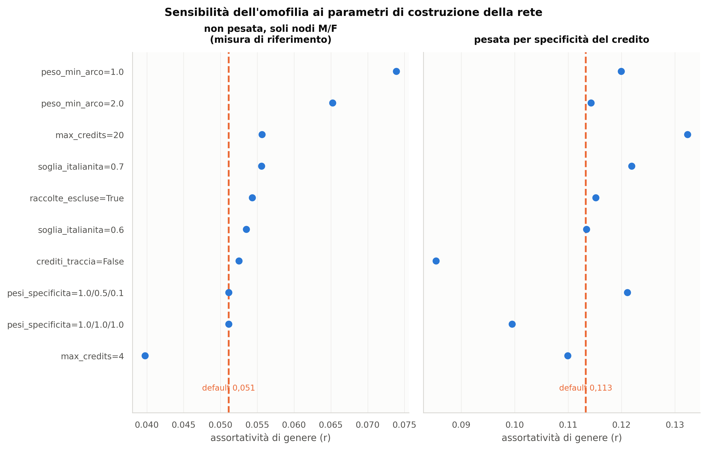
Ogni punto è l’assortatività di genere ottenuta cambiando un solo parametro rispetto alla configurazione di default (linea tratteggiata). Gli assi variati sono quelli che potevano ragionevolmente cambiare il risultato: quanti artisti al massimo può avere una pubblicazione perché conti come collaborazione, quale peso minimo deve avere un arco, se escludere le raccolte, quanto strettamente definire l’italianità, come pesare la specificità dei crediti, e se usare o no i crediti a livello traccia. Quest’ultimo è l’asse più informativo: disattivare i crediti di traccia significa tornare a una rete costruita solo sulle co-presenze di copertina, ed è il confronto che dice quanto il livello traccia stia effettivamente aggiungendo.
| variante | nodi | archi | gigante | r genere M/F | r pesata | r gen. musicale |
|---|---|---|---|---|---|---|
| default | 82.595 | 702.613 | 0,9566 | 0,0511 | 0,1133 | 0,5186 |
| max_credits=4 | 59.325 | 242.868 | 0,9080 | 0,0397 | 0,1099 | 0,5443 |
| max_credits=20 | 93.574 | 1.788.440 | 0,9751 | 0,0556 | 0,1324 | 0,4799 |
| peso_min_arco=1.0 | 54.697 | 383.680 | 0,9231 | 0,0739 | 0,1200 | 0,5786 |
| peso_min_arco=2.0 | 40.391 | 191.346 | 0,8671 | 0,0652 | 0,1143 | 0,6188 |
| raccolte_escluse=True | 76.911 | 611.095 | 0,9529 | 0,0543 | 0,1152 | 0,5269 |
| crediti_traccia=False | 81.527 | 655.967 | 0,9548 | 0,0525 | 0,0853 | 0,5225 |
| pesi_specificita=1.0/1.0/1.0 | 82.595 | 702.613 | 0,9566 | 0,0511 | 0,0995 | 0,5186 |
| pesi_specificita=1.0/0.5/0.1 | 82.595 | 702.613 | 0,9566 | 0,0511 | 0,1211 | 0,5186 |
| soglia_italianita=0.6 | 74.071 | 599.807 | 0,9561 | 0,0535 | 0,1134 | 0,5083 |
| soglia_italianita=0.7 | 62.981 | 470.571 | 0,9541 | 0,0556 | 0,1219 | 0,5005 |
Tabella — Sensibilità delle metriche chiave ai parametri di costruzione della rete
Dati completi in tables/t5_sensibilita.csv e
tables/t5_sensibilita.tex.
Sulle 10 varianti provate, l’assortatività di genere sui soli nodi determinati resta compresa fra 0,0397 e 0,0739, sempre positiva e sempre dello stesso ordine di grandezza del valore di riferimento (0,0511). Nessuna scelta di costruzione della rete, fra quelle difendibili, ribalta la conclusione.
La colonna dell’assortatività pesata è l’unica su cui la gerarchia di specificità dei crediti può manifestarsi, perché cambiare i pesi non cambia quali coppie di artisti siano collegate: cambia quanto contano. Il confronto è istruttivo.
Disattivare il livello traccia abbassa l’omofilia misurata di circa 25%, e appiattire i pesi la abbassa quasi altrettanto. La lettura è che le collaborazioni documentate in modo più specifico sono anche le più omofile: quando due nomi compaiono insieme sulla stessa traccia — non genericamente sullo stesso disco — la probabilità che condividano il genere sessuale è più alta. Una rete costruita sulle sole co-presenze di copertina sottostima quindi la segregazione, perché mescola la collaborazione vera con la coabitazione editoriale. È la giustificazione empirica della scelta di disegno descritta alla sezione 3.1.
| variante | nodi | archi | densita | quota_gigante | r_gender | r_gender_MF | r_gender_pesato | r_genere_musicale | quota_donne | peso_mediano | n_artisti | n_generi |
|---|---|---|---|---|---|---|---|---|---|---|---|---|
| genre_top1 | 82.595 | 702.613 | 0,0002 | 0,9566 | 0,0735 | 0,0511 | 0,1133 | 0,5186 | 0,1379 | 1,0000 | 100.201 | 16 |
| genre_top2 | 82.595 | 702.613 | 0,0002 | 0,9566 | 0,0735 | 0,0511 | 0,1133 | 0,4762 | 0,1379 | 1,0000 | 100.201 | 16 |
| genre_exclude | 54.334 | 433.408 | 0,0003 | 0,9542 | 0,0736 | 0,0598 | 0,1119 | 0,7231 | 0,1380 | 1,0000 | 65.773 | 15 |
Tabella — Metriche chiave usando il tag principale, il secondo tag, o escludendo gli artisti con attribuzione debole
Dati completi in tables/t5_genere_debole.csv e
tables/t5_genere_debole.tex.
Gli artisti il cui tag di genere principale copre meno del 40% delle
loro pubblicazioni sono marcati genre_weak: sono 34.428,
cioè 34,4% della popolazione. La tabella confronta tre trattamenti —
tenerli col tag principale, sostituirlo col secondo tag, escluderli del
tutto — per mostrare quanto le conclusioni su RQ2 dipendano da
un’attribuzione di genere musicale che per costruzione è incerta.
discogs, dati su disco
rotazionaleopt/mamba/envs/ergm| pacchetto | versione |
|---|---|
| gender_guesser | presente |
| matplotlib | 3.8.1 |
| networkx | 3.2.1 |
| numpy | 1.24.2 |
| pandas | 1.5.3 |
| psycopg2 | 2.9.10 (dt dec pq3 ext lo64) |
| pyarrow | 18.1.0 |
| scipy | 1.11.3 |
| seaborn | 0.13.2 |
| statsmodels | 0.14.6 |
Il cluster PostgreSQL risiede su un disco
rotazionale ma era configurato con
random_page_cost = 1.1, un valore tarato per dischi a stato
solido. Con quel costo il pianificatore preferisce percorsi ad accesso
casuale che su disco meccanico degradano a pochi megabyte al secondo: la
prima versione dell’estrazione girava a circa 5 MB/s. Le sessioni di
estrazione impostano perciò random_page_cost = 4 e riducono
il parallelismo, favorendo scansioni sequenziali, e i conteggi di
italianità sono stati riscritti come una sola passata
aggregata su release_artist invece di due join
ripetuti. Sono GUC di sessione: non modificano la configurazione del
server né i dati.
Analogamente, il calcolo della matrice di mixing è stato riscritto da
numpy.add.at a numpy.bincount su indici
appiattiti — risultato numerico identico, verificato, circa 50
volte più veloce — perché senza quella riscrittura le migliaia
di repliche bootstrap e di modello nullo previste dal disegno non
sarebbero state praticabili.
Tutte le interrogazioni sono in src/phase1_extract.py.
La più importante è quella che definisce la popolazione, in una passata
sola:
SELECT ra.artist_id,
count(*) FILTER (WHERE it.id IS NOT NULL) AS n_it,
count(*) AS n_all
FROM release_artist ra
LEFT JOIN (SELECT id FROM release WHERE country = 'Italy') it
ON it.id = ra.release_id
GROUP BY 1
HAVING count(*) FILTER (WHERE it.id IS NOT NULL) >= 2;La selezione finale (quota, minimo di pubblicazioni, esclusioni anagrafiche) avviene poi sui dati già a terra, così che la Fase 5 possa variare le soglie senza rileggere il database.
| step | seconds |
|---|---|
| ERGM genere_Rock | 3.183,3 |
| sensibilità | 2.138,1 |
| ERGM genere_Folk_World_&_Country | 1.643,7 |
| ERGM epoca_post2000 | 1.612,0 |
| ERGM complessiva | 1.573,4 |
| ERGM genere_Electronic | 1.485,7 |
| ERGM genere_Pop | 1.170,7 |
| ERGM genere_Classical | 926,5 |
| ERGM epoca_pre2000 | 880,3 |
| assortatività solo M/F | 828,8 |
| assortatività per strato | 617,8 |
| betweenness | 609,9 |
| genere debole | 467,1 |
| esportazione dataset | 323,2 |
| wikidata_blocco_B_italiani | 214,4 |
| mixing e assortatività globale | 127,3 |
| COPY raw_relgenre | 111,8 |
| monte carlo genere | 105,6 |
| COPY raw_ra | 103,1 |
| COPY raw_reltracks | 102,2 |
cd /media/disk2/datascience/analysis/gender_collab
./run_all.sh # esecuzione completa
./run_all.sh --from 3 # riparte dalla Fase 3
./run_all.sh --force # ignora i checkpoint e ricalcola tuttoOgni fase scrive un checkpoint in data/*.parquet e viene
saltata se il checkpoint esiste. I dati grezzi estratti stanno in
data/raw/, le figure in report/figures/, le
tabelle in report/tables/ sia in CSV sia in LaTeX.
release_label è vuota.
Confonde “artista italiano” con “artista pubblicato in Italia”.release_genre è vuota e i master coprono solo parte
delle pubblicazioni.